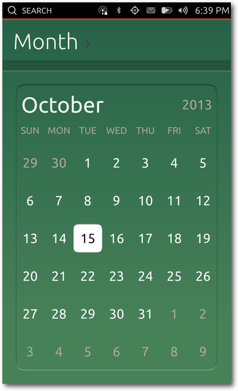
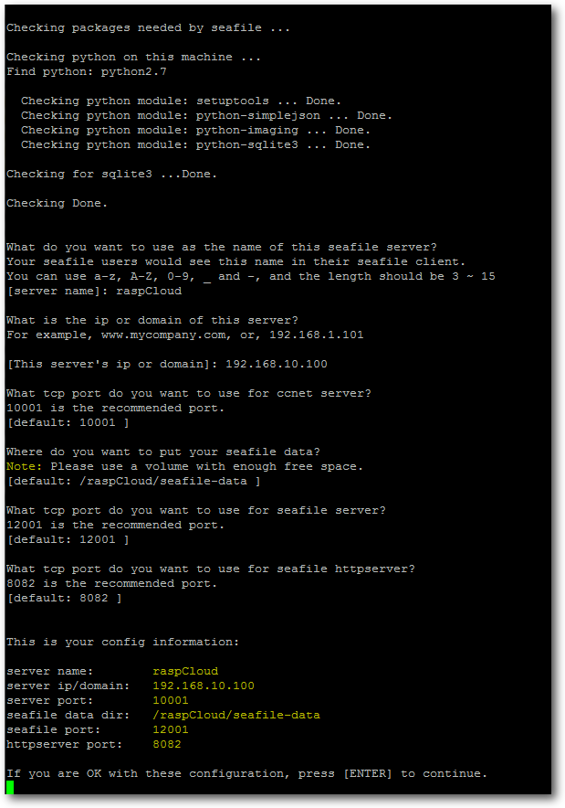
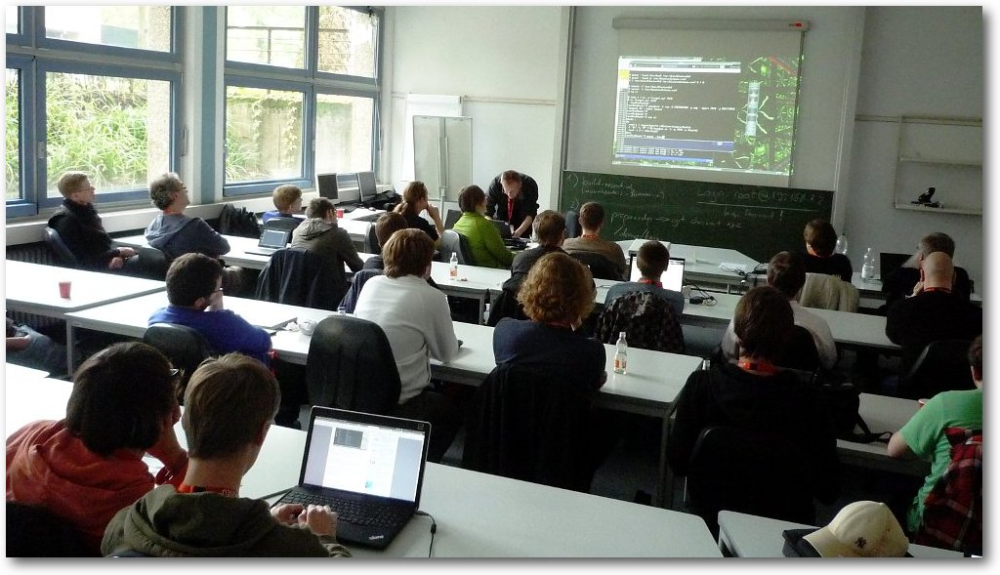

freiesMagazin November 2013
(ISSN 1867-7991)
Topthemen dieser Ausgabe
Ubuntu Touch ausprobiertDie Liste der Betriebssysteme, die unter einer Open-Source-Lizenz stehen und auf mobilen Endgeräten laufen, ist lang. Ein neues System auf diesem Feld ist Ubuntu Touch, welches zur Zeit von Canonical entwickelt wird. Am 17. Oktober 2013 erschien die erste offiziell stabile Version, auf die in dem Artikel ein Blick geworfen werden soll. (weiterlesen)
Äquivalente Windows-Programme unter Linux – Teil 1: Office-Programme
Die Artikelserie „Äquivalente Windows-Programme unter Linux“ soll verschiedene Programme vorstellen, die ein Standard-Windows-Benutzer von Windows kennt und bei einem Wechsel auf Linux vermissen würde. Der erste Teil der Serie widmet sich Office-Programmen, die typische Büroarbeiten umfassen (Textverarbeitung, Tabellenkalkulation, Präsentation). (weiterlesen)
Rückblick: Ubucon 2013 in Heidelberg
Was haben Krefeld, Göttingen, Leipzig und Berlin gemeinsam? Richtig: Sie alle waren bereits (mehrfach) Austragungsort der Ubucon. Seit diesem Jahr kann sich auch Heidelberg dieser Reihe anschließen, da sich die Ubuntu-Community Mitte Oktober dort traf, um über aktuelle Themen zu reden, Gedanken auszutauschen und Spaß zu haben. (weiterlesen)
Zum Index
Ubuntu Touch ausprobiert
von Sujeevan Vijayakumaran Die Liste der Betriebssysteme, die unter einer Open-Source-Lizenz stehen und auf mobilen Endgeräten laufen, ist lang. Ein neues System auf diesem Feld ist Ubuntu Touch, welches zur Zeit von Canonical entwickelt wird. Am 17. Oktober 2013 erschien die erste offiziell stabile Version. Ubuntu Touch ist von der Bedienung her grundlegend anders aufgebaut als Googles Android oder Apples iOS. Das System und dessen Apps lassen sich hauptsächlich durch verschiedene Gesten bedienen. Zu Beginn ist diese Art der Bedienung jedoch stark gewöhnungsbedürftig. Der Test erfolgte auf zwei Nexus-4-Smartphones, die freundlicherweise von Canonical für die diesjährige Ubucon [1] zur Verfügung gestellt wurden.Der Welcome-Screen.
Bedienung
Beim allerersten Anschalten eines Ubuntu-Touch-Gerätes erhält man zunächst eine kurze Einführung in die Bedienung des Systems. Diese kann man überspringen oder man folgt den Anweisungen auf dem Bildschirm. Dabei wird erklärt, dass jede der vier Kanten unter Ubuntu Touch mit verschiedenen Gesten belegt sind. Beim Wischen von der linken Kante her erscheint der App-Launcher. Dieser ist vergleichbar mit dem Unity-Launcher des Ubuntu-Desktops, der sich ebenfalls an der linken Seite des Bildschirms befindet. Unter Ubuntu Touch sind allerdings nicht alle Apps aufgelistet, sondern nur eine bestimmte Auswahl. Beim Wischen über die rechte Kante können die laufenden Apps einfach gewechselt werden. Falls sich der Nutzer auf dem Welcome-Screen (siehe unten) befindet, wird eben dieser zur Seite geschoben. An der oberen Kante befindet sich die Indikator-Leiste, über die man einen schnellen Zugriff auf verschiedene Dinge bekommt, wie etwa die Konfigurationen von WLAN, GPS und Bluetooth. Weiterhin lassen sich dort auch noch Lautstärke, Bildschirmhelligkeit und Uhrzeit anzeigen und anpassen. Praktisch ist dabei besonders, dass immer die Einstellung dargestellt wird, die man mit dem Finger zuvor heruntergezogen hat. Wenn der Nutzer beispielsweise seine empfangenen Nachrichten lesen möchte, reicht es, die Wischgeste direkt am entsprechenden Indikator beginnen zu lassen. Dann wird auch direkt das ausgewählte Untermenü geöffnet. Durch seitliche Wischgesten kann man allerdings auch zwischen den einzelnen Indikatoren schnell und einfach wechseln.Die Animation während des Wechselns auf den „Home-Scope”.
Die untere Kante besitzt entgegen der restlichen Kanten nur hin und wieder eine Funktion. Je nach geöffneter Anwendung befinden sich dort Bedienelemente, um einen Schritt zurückzugehen, Einstellungen anzupassen oder auch neue Elemente hinzuzufügen. Hierbei haben die App-Entwickler freie Hand. Wenn man die Wischgeste bis zur Mitte des Gerätes durchzieht, öffnet sich ein halb-transparentes Menü. Dieses beinhaltet ein Suchfeld sowie darüber einige Schaltflächen, die zur Zeit allerdings ohne weitere Funktionen sind. Beim Betätigen der Power-Taste erscheint bei einem bereits eingeschalteten Ubuntu-Touch-Gerät die Bildschirmsperre. Streng genommen ist dies aber gar kein Sperre, da sie das System nicht vor fremdem Zugriff schützt. Stattdessen nennt man es unter Ubuntu Touch den „Welcome-Screen“. Die Anzeige besitzt hierbei andere Funktionen als eine klassische Bildschirmsperre.
Laufende Apps.
Es werden drei Dinge angezeigt: die aktuelle Uhrzeit, das aktuelle Datum und ein Kreis, der diverse nützliche Daten anzeigen soll. Im aktuellen Zustand zeigt dieser nur die Anzahl der am selben Tag geschossenen Fotos sowie die Anzahl der am selben Tag getätigten Anrufe und erhaltene Nachrichten an. Wenn also an einem Tag mit dem Smartphone zehn Fotos geschossen wurden und insgesamt drei Anrufe getätigt wurden, dann zeigt Ubuntu Touch diese Information auf dem Welcome-Screen in der Mitte des Kreises an. In Zukunft sollen dort mehr Informationen angezeigt werden, etwa die Anzahl empfangener E-Mails oder auch ungelesene Tweets. Der Welcome-Screen ist allerdings nur wenig interaktiv. Auf den ersten Blick scheint es, als wenn die Information innerhalb des Kreises nur beim Anschalten des Displays erscheint. Mit einem Doppelklick innerhalb des Kreises erscheint allerdings auch die nächste Information.
Scopes
Für Ubuntu Touch gibt es insgesamt vier „Scopes”, die man auch als „Home-Screens“ ansehen kann. Nach dem Wegwischen des Welcome-Screens erscheint der „Home-Scope“. In diesem werden zur Zeit einige wenige Apps aufgelistet und einige gespeicherte Musik-Stücke im Raster dargestellt.Der „Home-Scope”.
Der „Home-Scope” befindet sich an der zweiten Position. Links davon befindet sich der „Music-Scope”. Dort werden aktuell zwei Dinge jeweils einzeln gruppiert: die gespeicherten Songs mitsamt eines Covers sowie populäre Songs aus dem Internet. Das gleiche gilt auch für den „Video-Scope”, der sich an der vierten und somit ganz rechten Position befindet. An der dritten Position befinden sich der „Application-Scope”. Sofern Apps zuvor geöffnet worden sind, werden diese dort aufgelistet. Weiterhin werden dort im Raster die installierten Apps, sowie „weitere App-Vorschläge“ aufgelistet. Bei letzterem lassen sich neue Apps installieren. Ganz unten befindet sich noch eine Vielzahl an „Dash Plugins“, die man aktivieren bzw. deaktivieren kann. Als Beispiel seien hier die Dash Plugins „Commands“, „Applications“ und „Click Packages“ genannt. Das „Commands”-Plugin bezieht Suchergebnisse aus Binärdateien von installierten Anwendungen in der Unity-Suche mit ein. Ebenfalls zusammenhängend mit der Unity-Suche ist das „Applications”-Plugin, welches installierte Anwendungen über die Suche finden lässt. Wenn man „Click Packages“ deaktiviert, lassen sich keine externen Apps installieren. In einem der Vorstellungsvideos [2] von Ubuntu Touch existiert übrigens ein „People-Scope“, der in der aktuellen Fassung allerdings nicht enthalten ist.
Core & System Apps
Auf dem Ubuntu Touch Image sind in der Standardversion bereits einige Apps vorinstalliert. Es folgt zunächst ein Überblick über diese Apps und deren Funktionen.Browser
Die Browser-App nutzt zum Start der App den vollen Bildschirm aus. Die Adressleiste ist dabei verborgen und wird erst sichtbar, wenn man von der unteren Kante aus wischt. Daraufhin erscheint am unteren Rand die Adressleiste, die noch einen zusätzlichen „Activity“- sowie einen „Back“-Button besitzt. Beim Klick auf „Activity“ wird die Browser-Historie angezeigt. Zusätzlich werden die aktuell geöffneten Tabs angezeigt, zwischen denen gewechselt werden kann bzw. ein neuer Tab geöffnet werden kann. Die Browser-App unterstützt zusätzlich zu der kurzen Wischgeste von der unteren Kante aus noch eine weitere Möglichkeit: Wenn man die Wischgeste bis zur Mitte durchführt, erhält man einige weitere Bedienmöglichkeiten des Browsers. Darunter die Vor- und Zurück-Buttons sowie einen Reload- und einen Bookmark-Button. Beim Betätigen des Bookmark-Buttons wird ein Lesezeichen hinzugefügt, das dann über das oben aufgeführte Menü erreichbar ist.Kalender
Die Kalender-App unterstützt verschiedene Darstellungsarten. Standardmäßig öffnet sich beim Start der App die Monatsansicht. Um zwischen den Monaten zu wechseln, reichen Wischgesten nach rechts bzw. links aus. Über die Titelleiste kann man zwischen der Tages-, Wochen-, Monats- und Jahres-Ansicht wechseln. Beim Klick auf einen spezifischen Tag in der Monatsansicht, öffnet sich automatisch die Tagesansicht. In der Optionsleiste, die wiederum durch die Wischgeste von der unteren Kante her aufgerufen wird, gibt es zwei Buttons, die genutzt werden können. Zum einen kann ein neuer Termin angelegt werden. Zum anderen kann die Ansicht auf den aktuellen Tag gestellt werden. Die Kalender-App in grün.
Wenn man einen neuen Kalender-Eintrag hinzufügen möchte, kann man dem Eintrag einen Titel geben, Start- und End-Uhrzeit festlegen sowie einen Ort definieren. Zusätzlich lassen sich Personen eintragen, die man trifft. Der Kalender-Eintrag kann auch als sich wiederholender Eintrag angelegt werden. Ein angelegter Kalender-Eintrag wird im Kalender dargestellt. In der Tagesansicht wird der Start- und Endzeitpunkt klar – mitsamt des Titels – dargestellt. Mit einem Klick auf einen Eintrag öffnet sich die ausführliche Beschreibung. Der Hintergrund der Termin-Details ist hier wiederum in weiß gehalten. Die Termin-Beschreibung wird allerdings nicht dargestellt, sondern nur alle anderen Informationen. Ein angelegter Termin lässt sich im Nachhinein nicht wieder anpassen. Die Optionsleiste besitzt in der Terminansicht nur einen Zurück-Button. Wenn man mehrere zeitlich überschneidende Termine anlegt, dann lassen sie sich unter Umständen nicht anklicken, da die Elemente übereinander liegen. Hier ist also definitiv noch einiges an Arbeit zu erledigen, um den Kalender sinnvoll nutzen zu können. Ebenfalls fehlen Möglichkeiten zur Synchronisation des Kalenders mit Online-Kalendern, wie beispielsweise CalDAV [3]. Die oben genannten Funktionen des Kalenders sind größtenteils erst am Release-Tag in das Ubuntu Touch Image mit eingeflossen. Davor waren noch etliche Platzhalter enthalten. Der Kalender ist in den verschiedenen Ansichten durchweg in Grün gehalten. Der Anblick ist dabei stark gewöhnungsbedürftig, da sich die Farbe optisch nicht ins Gesamtsystem einfügt. Einzig beim Dialog-Fenster zum Hinzufügen von Terminen begegnen einem die gewohnten Orange-Töne.
Kamera
Die Kamera-App besitzt im aktuellen Stand nur einige wenige, aber gängige Funktionen. Der Standard-Modus ist die Möglichkeit zur Aufnahme von Fotos. Mit einem Klick auf die zu fokussierende Stelle in der Vorschau, kann die Fokussierung der Kamera manuell eingestellt werden. Am unteren Rand befinden sich einige Buttons sowie ein Regler zum Zoomen. Der große mittlere Knopf ist zum Schießen von Fotos gedacht. Im Button links daneben lässt sich zwischen dem Foto- und Videomodus umschalten. Am linken Rand befindet sich zusätzlich die Option, den Kamera-Blitz an- bzw. auszuschalten oder ihn automatisch auslösen zu lassen. Rechts neben dem Kamera-Auslöser ist der Button zum Wechseln zwischen der Front- und Rückkamera platziert, welches problemlos und schnell vonstatten geht. Der Button am rechten Rand führt zur Galerie-App. In den Images vor dem Release enthielt das Menü, welches über die Wischgeste zur Mitte des Bildschirms auslösbar ist, die gleichen Bedienelemente in Listenform. In der finalen Version ist dies anscheinend wieder entfernt worden. Im Moment funktioniert auch der Video-Modus nicht. Der Video-Kamera-Button innerhalb der App ist schlicht ausgegraut, da diese Funktionen nicht rechtzeitig fertig geworden ist.Uhr
Die Uhr-App zeigt – wer hätte es gedacht – die aktuelle Uhrzeit an. Sie wird in Form einer Mischung aus einer analogen und digitalen Uhr dargestellt. Unterhalb dieser Uhr wird der aktuelle Ort und dessen Uhrzeit zusätzlich in digitaler Form angezeigt. Unter „Welt“ werden zusätzlich andere Städte und ihre Uhrzeiten aufgelistet. Darüber hinaus kann man die Städte über die Optionsleiste hinzufügen. Über die Titelleiste erreicht man weitere Funktionen der Uhr-App, etwa die Alarm-Funktion. Dort lassen sich entweder neu einzelne Alarme einstellen oder aber auch sich täglich oder wöchentlich wiederholende Alarme festlegen. Beim wöchentlichen Alarm lassen sich speziell einzelne Tage aktivieren und deaktivieren, sodass man dort beispielsweise nur die Arbeitstage auswählen kann. Die Alarme lassen sich allerdings nicht speichern und somit lässt sicht kein Alarm auslösen. Die Timer-Funktion kann individuell genutzt werden. Wenn man spontan nur einen Timer starten möchte, reicht es den Uhrzeiger des Kreises mit dem Finger zu drehen, um die Uhrzeit einzustellen. Das Verhalten des Timers ist am Anfang etwas verwirrend, da der Uhrzeiger sich nur bewegt, wenn man ihn direkt anfasst. Die Genauigkeit ist hierbei auf die Minute beschränkt. Eine sekundengenaue Definition der Zeit ist nicht möglich. Praktisch ist hingegen die Speicherung von Voreinstellungen, die im Anschluss unterhalb des Timers angezeigt werden. So kann man häufig genutzte Timer-Zeiten schon vorher erstellen, ohne sie jedes Mal neu konfigurieren zu müssen. Das letzte Feature der Uhr-App ist eine Stoppuhr. Durch einen Klick in die Mitte des Kreises kann dort die Stoppuhr gestartet werden. Zusätzlich gibt es die „Runden“-Funktion, um beispielsweise die einzelnen Bahnzeiten über eine Laufstrecke zu stoppen.Kontakte
Die Kontakte-App zeigt die gespeicherten Kontakte in alphabetischer Reihenfolge an. Die Sortierung geschieht anhand der Vornamen. In der Liste werden nur die Anfangsbuchstaben als Überschrift angezeigt, für die auch Kontakte existieren. Mit dem Klick auf einen der Buchstaben lassen sich die Kontakte-Listen ausblenden, sodass man schnell den/die Gesuchte findet, auch wenn viele Einträge vorhanden sind. Zu einem Kontakt kann man dabei Informationen wie etwa Name, mehrere Telefonnummern und auch Adressen hinzufügen. Zudem lassen sich die Daten für diverse Instant-Messenger-Dienste hinzufügen, ebenso wie ein Bild des Kontakts.Ansicht eines Kontakts.
Bei zu langen Namen hat die App allerdings noch Probleme, sodass die Namen einfach abgeschnitten werden und so Teile unter Umständen fehlen können.
Telefon-App
Zu jedem Smartphone gehört eine Telefon-App. Für die einen ist es eine nützliche App, für die anderen eventuell eher weniger. Entweder kann man die Telefonnummer einer Person eintippen oder man greift über die Titelleiste auf die gespeicherten Kontakte zu. Beim Eintippen der Telefonnummer werden dabei automatisch gespeicherte Kontakte vorgeschlagen. Ebenfalls enthalten ist die obligatorische Anrufliste.Ein eingehender Anruf von Toddy.
Das Telefonieren funktioniert problemlos. Während des Telefonats kann man auch den Lautsprecher aktivieren und deaktivieren. Das gleiche gilt für das Mikrofon. Bei einem eingehenden Anruf erscheint eine Benachrichtigung als kleines Overlay am oberen Rand des Displays. Sofern der Anrufer als Kontakt gespeichert ist, wird dort neben der Rufnummer auch dessen Name angezeigt. Man kann dabei wie gewohnt den Anruf annehmen oder ablehnen.
Telefonate funktionieren problemlos.
USSD-Codes [4] funktionieren aktuell allerdings noch nicht. Wenn man beispielsweise sein Guthaben – etwa mit *100# (variiert je nach Netzbetreiber) – abrufen möchte, erkennt die Telefon-App dies noch nicht und führt einen normalen Anruf durch. Beim Telefonieren wird der Annäherungs-Sensor des Smartphones genutzt, um den Bildschirm auszuschalten, während man das Gerät an das Ohr hält. Dies funktioniert soweit gut, allerdings flackert das Display, sobald man es während des Telefonats nicht mehr an das Ohr hält.
Zuletzt getätigte Anrufe.
Die Anrufliste sortiert alle Anrufe chronologisch abwärts pro Tag. In dieser Übersicht werden sowohl die Uhrzeiten, als auch Name und Profilbild des Kontakts aufgelistet.
Friends
Die Friends-App ist eine kombinierte Twitter- und Facebook-App. Sie dient also zum Abrufen von Statusmeldungen auf den beiden Plattformen. Beim ersten Start der App wird zunächst gemeldet, dass man ein oder mehrere Online-Konten in den Systemeinstellungen hinzufügen soll. Dort lassen sich aktuell Facebook, Twitter, Google und Ubuntu One hinzufügen. Über die App ist es nicht nur möglich, die Tweets und Facebook-Statusmeldungen abzurufen, sondern selbstverständlich auch eigene Posts beziehungsweise Tweets zu tätigen. Dabei kann man auswählen, ob man auf beiden Plattformen auf einmal posten möchte oder nur auf einer. Die Postings dürfen nicht länger als 140 Zeichen sein, weil die Texte sonst zu lang für Twitter wären. Zudem ist die App bei den Konfigurationsmöglichkeiten ziemlich stark eingeschränkt – sie existieren schlicht nicht. Auch das Abrufen der Statusmeldungen funktioniert nur bedingt, da zum Teil etliche Tweets fehlen. Twitter-Mentions, also wenn in Tweets der eigene Twitter-Name erwähnt wird, werden als Overlay auch außerhalb der App als Benachrichtigung angezeigt. Nach einigen Sekunden verschwindet diese Meldung allerdings wieder, sodass man nicht wirklich schnell darauf zugreifen kann. Ferner werden diese Benachrichtigungen nirgends in der App angezeigt.Galerie
Um geschossene Fotos anzuzeigen, gibt es die Galerie-App. Dabei existieren drei verschiedene Foto-Übersichts-Modi: „Events“, „Photos“ und „Albums“. Standardmäßig wird „Events” geöffnet, in dem die Fotos tageweise sortiert sind. Es werden die zuletzt aufgenommenen Fotos des Tages vorne angezeigt. Die Anzahl der dargestellten Fotos ist unterschiedlich, meist werden zwischen drei und fünf Fotos gezeigt. Mit einem seitlichen Wisch ist es möglich, die Vorschaubilder der einzelnen Fotos eines Tages zu überblicken. Mit einem Klick auf ein Bild öffnet es sich dann in der vollständigen Ansicht.Galerie Events-Ansicht.
Die Fotos können auch minimal bearbeitet werden, Funktionen wie das Rotieren und Ausschneiden sind bereits implementiert. Zusätzlich gibt es eine „Auto enhance“-Funktion, die das Foto verbessert bzw. verschlimmbessert. Aktuell scheint diese Funktion ein geschossenes Foto aufzuhellen oder auch abzudunkeln. Bei einigen Fotos ist es eine Verbesserung, bei anderen wiederum nicht. Nach dem Ausführen der jeweiligen Aktion gibt es auch einen „Undo-Button“, um einige Schritte rückgängig zu machen. Alternativ kann man das bearbeitete Foto auch komplett in den Originalzustand zurückversetzen. In der Menüleiste gibt es zudem die Möglichkeit, das aktuelle Foto einem Foto-Album hinzuzufügen. Wenn man zuvor noch kein Album angelegt hat, kann man im gleichen Schritt einfach ein neues erzeugen – inklusive eines Titels und Untertitels. Da die Alben wie echte klassische Fotoalben aussehen, kann man deren Buchumschlägen verschiedene Farben zuordnen. Im Anschluss lassen sich dem Album außerdem weitere Fotos hinzufügen. Das Ganze funktioniert für eine Vorabversion bereits ziemlich gut und ist auch sehr nett anzusehen, weil hier zusätzlich einige Animationen hinzugefügt wurden. Die Alben kann man über die Titelleiste erreichen. Wenn man dann ein Album geöffnet hat, werden zwei Bilder gleichzeitig angezeigt und mit einem Wisch nach links oder rechts kann man wie in einem echten Buch blättern. Die dritte Ansicht ist die oben erwähnte Fotos-Ansicht, in dem die Fotos schlicht in einem Raster dargestellt werden.
Messaging
Mit der Messaging-App lassen sich in erster Linie SMS schreiben. Eine MMS-Unterstützung ist aktuell leider noch nicht enthalten. Die Kurznachrichten lassen sich selbstverständlich auch problemlos empfangen.Die Message-App zeigt SMS an.
Bei Eingang einer SMS erscheint am oberen Rand des Displays eine Benachrichtigung mit dem Inhalt der Nachricht. Weiterhin lässt sich die Nachricht im Messenger-Indicator anzeigen. Dort ist es ebenfalls möglich, direkt zu antworten. Alternativ kann der Nutzer die Messaging-App starten und von dort aus antworten.

Die SMS im Message-Indicator.
Jede einzelne Nachricht kann man mit einer Wischbewegung in beide Richtungen löschen. Das gilt auch für alle Nachrichten mit einem Kontakt. Eine Nachfrage, ob die Nachrichten wirklich gelöscht werden soll, erfolgt nicht. Wenn ein Nutzer also zwischen den Apps wechseln will und dabei die Geste leicht versetzt durchführt, kann man versehentlich Nachrichten löschen. Die gleiche Geste ist übrigens auch bei den Kontakten enthalten, so dass auch dort versehentlich Kontakte gelöscht werden können.
Musik
Die Musik-App spielt die auf dem Gerät gespeicherten Musik-Dateien ab. Es gibt dazu verschiedene Modi, die genutzt werden können, um zwischen den einzelnen Musik-Stücken zu wechseln. Der Start-Modus heißt schlicht „Musik“, in dem sowohl die zuletzt abgespielten Stücke gelistet werden, als auch eine Kategorisierung in Genres stattfindet. Über die Titelleiste erreicht man zusätzlich die Modi „Künstler“, „Alben“, „Songs“ und „Playlists“. Die einzelnen Modi sollten dabei selbsterklärend sein. Beim Klick auf einen Song öffnet sich eine Liste der Songs, die nacheinander abgespielt werden.Notizen
Eine kleine aber feine App ist die Notiz-App. Die bisher einzige Funktion ist das Aufbewahren von kleinen Texten. Das Löschen einer Bemerkung ist nur möglich, wenn man jeden einzelnen Buchstaben der ganzen Notiz löscht. Sortiert werden sie absteigend vom letzten Bearbeitungszeitpunkt. Sinnvolle Funktionen wie das Gruppieren von Notizen oder ein Verschieben in den Papierkorb sind zur Zeit nicht implementiert.Systemeinstellungen
Die Systemeinstellungen sind in drei Kategorien unterteilt: „Netzwerk”, „Persönlich” und „System”. Unter Netzwerk sind drei Konfigurationen verfügbar: WLAN, Bluetooth und Mobilfunknetz. Das WLAN lässt sich einschalten, die Umgebung kann nach neuen Netzen durchsucht werden und man kann sich problemlos mit diesen verbinden. Zudem gibt es die Einstellung, dass sich mit bereits betretenen Netzwerken wieder automatisch verbunden werden soll. Unter den Mobilfunk-Einstellungen lassen sich viele Optionen konfigurieren, etwa die Auswahl des Mobilfunk-Providers, die mobile Datennutzung oder auch Daten-Roaming im Ausland. In den Bluetooth-Einstellungen lässt sich zur Zeit ein Headset verbinden.Systemeinstellungen im Überblick.
Unter den persönlichen Einstellungen gibt es vier Punkte: „Hintergrund”, „Sound”, „Sprache & Text” sowie „Accounts”. Unter „Hintergrund” lässt sich ein Hintergrundbild für die Scopes festlegen. Standardmäßig ist das Hintergrundbild ein orange-lilaner Farbverlauf in den aktuell typischen Ubuntu-Farben. Beim Festlegen eines Hintergrundbildes wird die Galerie geöffnet und man kann ein Foto auswählen. Unter den Ton-Einstellungen befinden sich aktuell nur zwei verschiedene Punkte, nämlich die Töne für einen eingehenden Anruf sowie einer eingehenden SMS. Unter „Sprache & Text” ist es möglich die Systemsprache zu ändern. Der Standard ist US-Englisch, aber es sind weit mehr Sprachen verfügbar. Der letzte Punkt unter den persönlichen Einstellungen sind die Konten, in dem sich Konten von Ubuntu One, Twitter, Facebook und Google konfigurieren lassen. Unter System finden sich vier Punkte: „Batterie”, „Zeit & Datum”, „Sicherheit & Datenschutz” sowie „Aktualisierungen”. Unter „Batterie” wird die Ladekapazität des Akkus in einem Graphen dargestellt. Zudem kann die Bildschirmhelligkeit mit Hilfe eines Schiebereglers angepasst sowie Funknetzwerke an- und ausgeschaltet werden. Unter „Zeit & Datum” lässt sich die aktuelle Zeitzone sowie die aktuelle Zeit anpassen und das aktuelle Datum setzen. Alternativ kann man die Uhrzeit und das Datum auch automatisch über das Netzwerk synchronisieren lassen. Unter den Datenschutz-Einstellungen ist es möglich, einige Funktionen zu beschneiden. Die Statistiken, die auf dem Welcome-Screen erscheinen, können so beispielsweise deaktiviert werden, damit Fremde sie nicht lesen können. Die Dash-Suche schlägt in der Standardeinstellung sowohl lokal auf dem Gerät als auch im Internet das Eingabewort nach. Dies kann man, wenn gewünscht, auf das Telefon selbst begrenzen. Weiterhin kann man anpassen, ob Absturz-Berichte an Canonical gesendet werden sollen oder nicht. Unter den Aktualisierungen lassen sich relativ einfach die Systemaktualisierungen suchen und aktualisieren. Es kann auch ausgewählt werden, ob die Aktualisierungen automatisch installiert werden oder man diese eben manuell durchführt. Hierbei handelt es sich allerdings ausschließlich um Systemaktualisierungen; App-Aktualisierungen werden separat gehandhabt. Der letzte Punkt in den Systemeinstellungen ist „Über das Telefon“. In diesem Punkt werden fast ausschließlich Informationen zum Gerät dargestellt, wie etwa die Seriennummer, die IMEI [5], die Betriebssystem-Version (hier: Ubuntu 13.10) oder auch der letzte Aktualisierungszeitpunkt. Zusätzlich gibt es den Storage-Punkt, in dem die Speichernutzung angezeigt wird. Dort wird außerdem der freie Speicher angezeigt sowie welche Arten von Dateien den Platz auf dem Gerät belegen.
Terminal
Zu (fast) jedem Linux-System gehört ein Terminal-Emulator. Auch Ubuntu Touch besitzt eine Terminal-App, mit der man Kommandos ausführen kann. Für den täglichen Gebrauch von Ubuntu Touch braucht man eigentlich keine Terminal-App. Ein Otto-Normalverbraucher sollte also eigentlich mit der Terminal-App nichts anfangen können. Shell-Liebhaber werden vermutlich Gefallen an der Terminal-App gewinnen, da man durchaus diverse Vorteile hat, wenn man einige Konsolen-Anwendungen nutzen möchte. Näheres dazu folgt im späteren Verlauf des Textes. In den Einstellungen zu der App lässt sich sowohl die Textgröße anpassen, als auch das Farbschema konfigurieren.Weitere Apps
Einige der Core-Apps werden in diesem Test-Bericht nicht näher behandelt. Es gibt nämlich zusätzlich zu den oben genannten, ausführlich vorgestellten Apps weitere vorinstallierte Apps für das Wetter, für Aktien, einen Datei-Manager sowie einen RSS-Reader namens Shorts. Weiterhin sind vier Apps für Twitter, Facebook, Amazon und Google Mail enthalten. Die Apps sind allerdings nichts anderes als „Wrapper-Apps“, die jeweils die mobilen Seiten des jeweiligen Dienstes aufrufen. Problematisch ist dabei, dass einige Apps eigene Gesten benötigen. In der Twitter-App kann man nämlich die Tweets abrufen beziehungsweise aktualisieren, wenn man die Timeline nach unten zieht. Das funktioniert allerdings unter Ubuntu Touch nicht, da systemweit ein sogenanntes „Bouncing“ aktiv ist. Das heißt, der Inhalt der App wird beim Scrollen nach oben oder nach unten gezogen, auch wenn kein Inhalt mehr folgt. Beim Loslassen des Fingers rutscht es wieder an die richtige Stelle. Dieses Feature ist beispielsweise bei iOS und auf Samsungs Android-Geräten aktiv. Das Problem hierbei ist also, dass das systemweite Feature die Geste innerhalb der App überschreibt. Hier wäre es also notwendig, dass die Gesten auch von HTML5-Apps genutzt werden können, sofern nicht das Ubuntu SDK verwendet wird. Vorinstalliert sind zusätzlich zwei Spiele: Sudoku und Dropping Letters. Sudoku sollte für die meisten bekannt sein. Beim Spiel Dropping Letters fallen Buchstaben von oben nach unten. Ziel des Spiels ist es, anhand der Buchstaben Wörter zu bilden, damit die Kästchen verschwinden. Ist eine der Spalten vollständig mit Buchstaben gefüllt, dann ist das Spiel zu Ende.Click Packages
Das Ubuntu Software Center gibt es zur Zeit nicht für Ubuntu Touch. Um Apps zu installieren, existiert ein Bereich unterhalb der installierten Apps im Application-Scope. Dieser wird einfach nur mit „weitere Vorschläge“ betitelt. Dort finden sich zusätzlich zu den installierten Apps noch etwas mehr als 50 Apps. Einige der Apps sind einfache Wrapper über mobile Webseiten, andere sind wiederum „echte“ native Apps, die speziell für Ubuntu Touch entwickelt wurden. Im Rahmen des Ubuntu App Showdown Contests [6] sind unter anderem drei Apps entstanden: ein Reddit-Client namens „Karma Machine“, eine Rezeptverwaltungs-App „Saucy Bacon“ sowie das Spiel „Snake“. Weiterhin gibt es bislang nur wenige interessante Apps. Zu diesen gehört zum Beispiel Fahrplan [7], mit der man Fahrten mit dem öffentlichen Nahverkehr in Europa und Australien planen kann. Mit TouchWriter lassen sich Texte am Smartphone schreiben, die dann zu PDF, ODT oder auch HTML exportiert werden können. Die App „Geldliste“ reiht sich in die Reihe der produktiven Apps ein, mit denen man seine Ausgaben verwalten kann. Mit Ubuntu Tasks und Simple ToDo sind auch Todo-List Manager verfügbar.Was fehlt?
Einige aufmerksame Leser haben vielleicht schon gemerkt, was für eine wichtige App fehlt: eine für E-Mails! In den Core-Apps gibt es aktuell keinen E-Mail-Client. Es ist zwar eine Gmail-Web-App vorinstalliert, allerdings ist diese weder nativ, noch möchte jeder Google Mail nutzen. Für das erste Release von Ubuntu Touch wird es somit keine native E-Mail-App geben. Vermutlich wird frühestens für Ubuntu 14.04 eine entsprechende Anwendung erscheinen. Einige Nutzer dürften zusätzlich vermutlich einen WhatsApp-Client vermissen. Dieser Dienst wird von vielen Nutzern weltweit genutzt. Das Problem hierbei ist das proprietäre Protokoll. Es gab [8] zwar bereits einen Ansatz [9], einen WhatsApp-kompatiblen Client für Ubuntu Touch bereitzustellen, aber die Arbeiten sind wieder zum Erliegen gekommen. Grund war, dass dem Autor die Zeit zum Entwickeln fehlte, nachdem WhatsApp das Protokoll verändert hatte. Hier wäre natürlich das Angebot einer App durch die Firma hinter WhatsApp ideal, was zur Zeit noch nicht in Sicht ist.Unter der Haube
Mit dem ersten stabilen Release von Ubuntu Touch 13.10 (Saucy Salamander) ist das System für offiziell zwei Geräte verfügbar. Canonical unterstützt neben dem Google Nexus 4 [10] noch das Galaxy Nexus [11]. Weiterhin werden noch zwei weitere Builds für Geräte zur Verfügung gestellt, die aber explizit nicht zum Release von Saucy Salamander und somit nicht zum Stable-Zweig gehören. Dies wäre zum einen das Nexus 7 (2012) [12] sowie das Nexus 10 [13]. Für das erste Release von Ubuntu Touch wurde ein großer Wert auf die Smartphones gesetzt und somit weniger auf die Tablets, weshalb für die beiden Tablets kein stabiles Release erfolgte. Neben den oben genannten Geräten gibt es noch weitere Images, die auch auf anderen Geräten laufen. Diese werden allerdings nicht offiziell von Canonical unterstützt, sondern sind Arbeiten aus der Community. Die Liste der funktionierenden findet sich im Ubuntu Wiki [14]. Unter den Funktionsfähigen sind viele aktuelle High-End-Geräte, aber auch Geräte, die ein bis zwei Jahre alt sind. So gibt es zwar Builds für das Samsung Galaxy S2 und S3, allerdings nicht für das S4. Für die Entwicklung auf den vier Nexus-Geräten pflegt das Ubuntu Touch Team eine Tabelle in GoogleDocs [15], welches die aktuelle Unterstützung der Hardware auf den verschiedenen Geräten [16] übersichtlich darstellt. Aktuell wird das Nexus 4 am besten unterstützt; das Galaxy Nexus folgt als Nächstes. Bei einigen Sensoren wurde allerdings die Arbeit noch gar nicht begonnen, sodass diese nicht funktionieren. Als Beispiel sei hier das Gyroskop oder der Kompass genannt. Bei den Ubuntu Touch Images wird zwischen „flipped“ und „unflipped“ unterschieden. „Unflipped“ Images sind stark Android-basierend, d. h. auf diesen Systemen läuft als Hauptbetriebssystem Android. Zunächst startet Android komplett und anschließend wird Ubuntu mittels chroot [17] ausgeführt. Diese Variante wurde allerdings nur zu Beginn der Entwicklung angewandt. Im Laufe der Zeit wurde dann allerdings ein „flip“ durchgeführt, d. h., dass nun nicht mehr Android komplett bootet und dann Ubuntu gestartet wird, sondern zunächst Ubuntu gestartet wird und im Anschluss einige Android-spezifische Tools in einem Container gestartet werden. Da hier die Funktionsweise vertauscht bzw. „gedreht“ wurde, bekamen die entsprechenden Images den Namenszusatz „flipped“. In den Community-Builds sind viele Images weiterhin „unflipped“, wie man aus der entsprechenden Tabelle entnehmen kann. Die offiziell unterstützten Geräte von Canonical sind schon sehr früh in der Entwicklung von Saucy auf die neue Methode umgeschwenkt. Ubuntu Touch nutzt als Display-Server bereits jetzt standardmäßig Mir [18]. Mir wurde allerdings erst knapp eine Woche vor dem Release von Saucy zum Standard erhoben. Vorher war stets SurfaceFlinger [19] als Display-Server im Einsatz, welches von Google entwickelt wird und unter Android zum Einsatz kommt. Android hat aktuell immer noch großen Einfluss auf Ubuntu Touch. Sowohl aus Kompatibilitätsgründen zu spezifischen Geräten, als auch an der einfacheren Umsetzung werden viele Android Services unter Ubuntu Touch ausgeführt. Die Services laufen dabei innerhalb eines LXC-Container [20] und sind somit vom restlichen System abgeschottet. Der Linux-Kernel wird weitestgehend von Android übernommen; dort werden nur wenige Änderungen implementiert. Ein Beispiel ist die Nutzung von AppArmor [21]. Zusätzlich wird OpenGL ES 2.0 HAL [22] sowie Treiber von Android übernommen. Weiterhin wird ebenfalls der Media HAL übernommen, womit im Wesentlichen die Hardware-Video-Dekodierung ermöglicht wird. Zuallerletzt sei auch noch RILD erwähnt. Dies ist ein Interface, um die Mobilfunkverbindung zu einem Provider aufzubauen und aufrecht zu erhalten. Die Kommunikation zwischen Ubuntu und dem Android Linux-Kernel wird mittels Binder, Sockets und libhybris [23] realisiert. Binder ist für die Interprozess-Kommunikation zuständig, während libhybris dafür zuständig ist, Bionic-Code [24] unter einer gängigen Linux-Distribution auszuführen.Fazit
Die Veröffentlichung der ersten Version von Ubuntu Touch ist erst wenige Tage her. Viele Dinge funktionieren entweder gar nicht oder nur bedingt. Andere Dinge sind wiederum gut umgesetzt und funktionieren. In der Bedienführung wurden einige interessante Ideen implementiert, womit sich ein Ubuntu Touch Gerät schnell und einfach bedienen lassen. Einige dieser Ideen sind jedoch etwas umständlich; z. B. das Bedienen des „Zurück“-Buttons, wofür sowohl eine umständliche Geste, als auch ein normaler Tastendruck notwendig sind. Je mehr Anwendungen man startet, desto häufiger passiert es, dass das System ziemlich langsam wird. Es tummeln sich weiterhin noch viele Bugs, die hin und wieder auftreten, etwa ein plötzliches Verschwinden der Tastatur. Nach dem Beenden von Apps lässt sich das System dann aber wieder schnell nutzen. Einige Core-Apps und System-Apps sind noch stark beschnitten, sodass man Ubuntu Touch kaum auf produktiven Geräten nutzen kann, wenn man auf mobile Datenverbindung, Kalender-Synchronisation oder einer nativen E-Mail-Client angewiesen ist. Man darf also noch etwas abwarten, bis man Ubuntu Touch produktiv einsetzen kann. Möglicherweise gibt es dann auch schon Geräte, bei denen Ubuntu Touch als System standardmäßig ausgeliefert wird. Laut Canonical soll dies bereits Anfang nächsten Jahres der Fall sein. Links[1] http://ubucon.de/
[2] http://www.youtube.com/watch?v=cpWHJDLsqTU
[3] https://de.wikipedia.org/wiki/Caldav
[4] https://de.wikipedia.org/wiki/USSD-Codes
[5] https://de.wikipedia.org/wiki/International_Mobile_Equipment_Identity
[6] http://ikhaya.ubuntuusers.de/2013/08/08/ubuntu-app-showdown-contest-startet/
[7] http://notyetthere.org/?page_id=230
[8] http://pmeyhoefer.de/blog/whatsapp-fur-ubuntu-und-ubuntu-phone-bereits-in-der-entwicklung/
[9] https://launchpad.net/whosthere
[10] http://www.google.de/nexus/4/
[11] https://de.wikipedia.org/wiki/Galaxy_Nexus
[12] https://de.wikipedia.org/wiki/Nexus_7
[13] https://de.wikipedia.org/wiki/Nexus_10
[14] https://wiki.ubuntu.com/Touch/Devices
[15] https://docs.google.com/spreadsheet/ccc?key=0ArLs7UPtu-hJdDZDNWliMmV1YUJ3Zk1pQlpDdGp4VFE#gid=0
[16] https://wiki.ubuntu.com/Touch/Porting
[17] https://de.wikipedia.org/wiki/Chroot
[18] https://en.wikipedia.org/wiki/Mir_(display_server)
[19] http://en.wikipedia.org/wiki/SurfaceFlinger
[20] http://wiki.ubuntuusers.de/LXC
[21] http://wiki.ubuntuusers.de/AppArmor
[22] https://de.wikipedia.org/wiki/HAL_(Software)
[23] https://en.wikipedia.org/wiki/Hybris_(software)
[24] http://en.wikipedia.org/wiki/Bionic_(software)
| Autoreninformation |
| Sujeevan Vijayakumaran (Webseite) testete etwa einen Monat lang Ubuntu Touch und hielt dazu einen Vortrag auf der diesjährigen Ubucon in Heidelberg. |
Diesen Artikel kommentieren
Zum Index
Der Oktober im Kernelrückblick
von Mathias Menzer Basis aller Distributionen ist der Linux-Kernel, der fortwährend weiterentwickelt wird. Welche Geräte in einem halben Jahr unterstützt werden und welche Funktionen neu hinzukommen, erfährt man, wenn man den aktuellen Entwickler-Kernel im Auge behält.Linux 3.12
Auch wenn es mit Linux 3.12-rc3 im September nach einer ersten Beruhigung aussah, kam noch etwas Dickeres nach. Die vierte Entwicklerversion [1] hatte wieder mehr Änderungen im Gepäck. Diese fanden sich zum guten Teil in Fehlerkorrekturen im Netzwerktreiberbereich, zum Beispiel für Broadcoms NetXtreme2- oder Intels XL710-Familie, zu der bislang jedoch noch keine Informationen bekannt sind. Die darauf folgenden Versionen -rc5 [2] und -rc6 [3] fielen dann jedoch bedeutend kleiner aus. Zusammen konnten sie immerhin eine Reihe von Korrekturen an den Treibern für AMD/ATI- und Intel-Grafikchips aufweisen und eine längere Liste an Geräte-IDs zur Unterstützung neuer USB-Geräte von Huawei hinzugewinnen. Vielleicht war der Großteil der Linux-Entwickler auch mit Vorbereitungen zum diesjährigen Kernel Summit [4] beschäftigt, denn kurz nach dessen Ende legte Torvalds mit -rc7 [5] wieder eine größere Version vor. Doch trotz der Tatsache, dass sie größer war als ihre beiden Vorgänger zusammengenommen, wies sie größtenteils kleinere Fehlerkorrekturen auf, unter anderem für die zuvor bereits erwähnten NetXtreme2-Netzwerk-Chipsätze. So kündigte Torvalds dann auch das baldige Erscheinen der Final-Version an.Neuauflage der Linux-Firewall?
Noch ist Linux 3.12 nicht erschienen, doch wirft die 13 schon ihre Schatten voraus. Aller Voraussicht nach könnte mit „nftables“ eine neue Infrastruktur für die Filterung von Netzwerkpaketen in 3.13 aufgenommen werden [6]. Das Netfilter-Projekt [7] entwickelt einen Nachfolger für seinen, seit 2000 in Linux verfügbaren, Paketfilter. Dabei soll nftables die bislang separaten Werkzeuge iptables für IPv4, ip6tables für IPv6, „arptables“ für die Behandlung von Paketen des Address Resolution Protocol [8] sowie das weniger bekannte „ebtables“ unter einem Dach vereinen. Für den Administrator ergibt sich dadurch, dass insbesondere die Konfiguration von IPv4- und IPv6-Firewall- Regeln nun mit dem gleichen Werkzeug „nft“ erstellt und verwaltet werden können. Diese Userspace-Komponente wird jedoch eine neue Syntax aufweisen, die sich von den Vorgängern unterscheidet. nftables wird bereits seit 2009 entwickelt und stellt damit kein ganz frisch geschlüpftes Küken mehr dar, sodass die Bereitschaft zur Annahme seitens der Kernel-Entwickler recht hoch sein dürfte. Links[1] https://lkml.org/lkml/2013/10/6/148
[2] https://lkml.org/lkml/2013/10/13/164
[3] https://lkml.org/lkml/2013/10/19/132
[4] http://events.linuxfoundation.org/events/linux-kernel-summit
[5] https://lkml.org/lkml/2013/10/27/195
[6] http://www.pro-linux.de/-0h214fa0
[7] https://de.wikipedia.org/wiki/Netfilter
[8] https://de.wikipedia.org/wiki/Address_Resolution_Protocol
| Autoreninformation |
| Mathias Menzer (Webseite) behält die Entwicklung des Linux-Kernels im Blick, um über kommende Funktionen von Linux auf dem laufenden zu bleiben und immer mit interessanten Abkürzungen und komplizierten Begriffen dienen zu können. |
Diesen Artikel kommentieren
Zum Index
Äquivalente Windows-Programme unter Linux – Teil 1: Office-Programme
von Maria Seliger Die Artikelserie „Äquivalente Windows-Programme unter Linux“ soll verschiedene Programme vorstellen, die ein Standard-Windows-Benutzer von Windows kennt und bei einem Wechsel auf Linux vermissen würde. Der erste Teil der Serie widmet sich Office-Programmen, die typische Büroarbeiten umfassen (Textverarbeitung, Tabellenkalkulation, Präsentation). Die weiteren Teile werden sich mit Informationsmanagement, PDF-Bearbeitung, Grafik- und Bildbearbeitung, Internet-Programmen (Browser, Downloadmanager etc.), Musik- und Video-Programmen sowie Zubehör- und Hilfsprogrammen beschäftigen.Office-Programme unter Linux
Programme der Microsoft Office Suite [1] sind im Unternehmensbereich und im Privatgebrauch weit verbreitet, aber normalerweise an das Windows-Betriebssystem gebunden. Man kann Microsoft Office allerdings auch für Mac OS erwerben [2]. Microsoft Office besteht – je nach Konfiguration – aus den Anwendungen Word (Textverarbeitung), Excel (Tabellenkalkulation), PowerPoint (Präsentation), Outlook (Personal Information Manager), Access (Datenbankverwaltungssystem), Publisher (DTP-Programm) und OneNote (Notizbuch und Informationsmanager). Für diese Programme einen Ersatz zu finden ist nicht so schwierig, und die Auswahl wird immer größer. Im Bereich von Linux gibt es sowohl Alternativen aus dem Open-Source-Umfeld als auch aus dem kommerziellen Bereich. Dabei sollte man darauf achten, dass die Programme das OpenDocument-Format [3] unterstützen. Einen Test zu der Verarbeitung dieses Formates findet man in freiesMagazin 04/2011 [4] unter dem Titel „Test: OpenDocument-Format für den Datenaustausch“.SoftMaker Office for Linux
Wer eine Alternative zu Microsoft Office sucht, die möglichst getreu Microsoft-Office-Dateien darstellen und bearbeiten kann, der ist mit SoftMaker Office for Linux [5] gut bedient. Die Suite besteht aus den Elementen TextMaker (als Ersatz für Word), PlanMaker (als Ersatz für Excel) und Presentations (als Ersatz für PowerPoint). Siehe hierzu auch den Artikel „SoftMaker Office 2012“ in freiesMagazin 12/2012 [6]. Nach eigenem Bekunden lassen sich mit der Suite Word-Dokumente in den Version 6.0 bis 2010, Excel-Dokumente in den Versionen 5.0 bis 2010 und PowerPoint-Dokumente in den Versionen 97 bis 2010 originalgetreu öffnen und speichern. Zusätzlich bietet die Suite an, Dokumente im OpenDocument-Format zu speichern und in PDF zu konvertieren.
SoftMaker Office TextMaker.
Die Anordnung der Menüs entspricht in etwa der Anordnung in Microsoft Office (bis Microsoft Office 2010), sodass hier nur eine geringe Einarbeitung notwendig ist. Besonders hervorzuheben sind die geringen Systemressourcen, die das Programm verbraucht, und der schnelle Programmstart. Mit einem Preis von ca. 70 Euro ist das Programm nicht ganz billig, ist aber die Alternative, wenn man viel mit Microsoft-Office-Dokumenten arbeiten muss. Insbesondere interessant wird das Programm auch, wenn man ein Android-Gerät besitzt und mit diesem Dokumente bearbeiten will.
- Homepage: http://www.softmaker.de/of.htm
- Lizenz: kommerziell, Kosten: ca. 70 €
- Unterstützte Betriebssysteme: Microsoft Windows (ab XP/Windows Server 2003, hier auch portabel), GNU/Linux (mit glibc 2.2.5 oder höher), Android 2.2 oder höher und eine ARM-kompatible CPU, ältere Versionen existieren für Windows Mobile & Ce (SoftMaker Office 2010)
- Ersetzt: Microsoft Office Word, Microsoft Office Excel, Microsoft Office PowerPoint
Apache OpenOffice bzw. LibreOffice
OpenOffice [7] als Suite hat schon eine längere Entwicklung hinter sich. Ein Ableger davon ist LibreOffice [8], das inzwischen der OpenOffice-Suite den Rang abläuft. Die beiden Programme unterscheiden sich in der Bedienung im Moment noch nicht sehr viel – der Artikel nimmt Bezug auf LibreOffice. LibreOffice benutzt zur Speicherung das OpenDocument-Format und besteht aus den Modulen Writer (Ersatz für Word), Calc (Ersatz für Excel), Impress (Ersatz für PowerPoint), Base (Ersatz für Access), Draw (ein Grafik- und Zeichenprogramm) und Math (ein Formeleditor).LibreOffice Writer.
LibreOffice besitzt Import- und Exportfilter für Microsoft-Dokumente, zum Beispiel auch für docx-Dateien. Die Darstellung von Microsoft-Dokumenten ist nicht immer fehlerfrei, aber meistens brauchbar. Der Funktionsumfang der Programme entspricht in etwa den Microsoft-Programmen, die Anordnung der Menüpunkte weicht aber in vieler Hinsicht von Microsoft-Office-Programmen ab. Deshalb ist hier eine längere Einarbeitungszeit erforderlich. Für LibreOffice und OpenOffice gibt es viele Erweiterungen, die neue Funktionalitäten für die Programme bieten. Über einen Extension Manager (ähnlich wie in Firefox) lassen sich diese installieren und zuschalten.
LibreOffice Draw.
LibreOffice ist auch dann zu empfehlen, wenn man auch mal Microsoft-Visio-Dateien bearbeiten muss. Dieses geschieht im Zeichenprogramm Draw. Unter OpenOffice ist die Funktion nicht vorhanden. LibreOffice ist inzwischen eine „ausgewachsene“ Office-Suite, die sich vor Microsoft Office nicht verstecken muss und alle Funktionen besitzt, die im Büroalltag benötigt werden.
- Homepage: OpenOffice: http://www.openoffice.org/de/, LibreOffice: http://de.libreoffice.org/
- Lizenz: Apache Lizenz, kostenlos bzw. MPL, LGPL 3+ und GPL 3+, kostenlos
- Unterstützte Betriebssysteme: Windows (hier auch portabel), GNU/Linux, Mac OS X, Solaris, FreeBSD
- Ersetzt: Microsoft Office Word, Microsoft Office Excel, Microsoft Office PowerPoint, Microsoft Office Access, zum Teil auch Microsoft Visio
CalligraOffice
CalligraOffice [9] ist Teil des KDE-Desktops und eine neue Office-Suite, die sich im Moment rasch weiterentwickelt. Die Suite besteht aus den Modulen Words (Ersatz für Microsoft Word), Sheets (Ersatz für Microsoft Excel), Stages (Ersatz für Microsoft PowerPoint), Kexi (Ersatz für Microsoft Access), Braindump (Gedächtnis-Protokolle), Flow (Ersatz für Microsoft Visio mit Flussdiagrammen), Author (E-Book-Bearbeitung und -Publishing), Krita (digitales Malen), Karbon (Vektor-Grafiken) und Plan (Ersatz für Microsoft Project – Projektmanagement). Als Speicherformat nutzt CalligraOffice in vielen Teilen das OpenDocument-Format.Calligra Words.
Die Oberfläche unterscheidet sich ziemlich deutlich von den anderen vorgestellten Office-Programmen, denn ein Großteil der Befehle, die man sonst über ein Menü erreicht, ist hier über eine Seitenleiste (Dockers) erreichbar. CalligraOffice bietet Import- und Exportfilter für Microsoft-Word- und Excel-Dateien, allerdings sind diese Filter bei einem komplexen Layout noch ziemlich fehlerbehaftet. Anders ist das bei Stages, das den Import für PowerPoint-Dateien bietet und schon ziemlich stabil ist. Kexi bietet u. a. die Möglichkeit, Microsoft-Access-Datenbanken zu verwalten. Mit Flow lassen sich außerdem Visio-Dateien bearbeiten. Braindump bietet einige Konzepte, die auch in Microsoft OneNote vorkommen (z. B. freie Anordnung von Elementen auf einem Blatt), ist aber noch sehr einfach gehalten.
Calligra Sheets.
Standardmäßig nutzt CalligraOffice OpenDocument-Formate, wie sie auch von OpenOffice und LibreOffice benutzt werden. Die Menüs sind weniger umfangreich, die Einarbeitung ist nicht schwerer als in LibreOffice. Von allen Office-Suiten bietet CalligraOffice die meisten Programme. So ist das Programm Author für die E-Book-Bearbeitung einzigartig in einer Office-Suite. Allerdings ist die ganze Suite im Moment noch nicht so stabil wie z. B. LibreOffice und deshalb nur bedingt für den professionellen Einsatz zu empfehlen.
Calligra Flow.
- Homepage: http://calligra-suite.org/
- Lizenz: LGPL, GPL, kostenlos
- Unterstützte Betriebssysteme: GNU/Linux, FreeBSD, Solaris, eingeschränkt lauffähig unter Mac OS X und Windows
- Ersetzt: Microsoft Office Word, Microsoft Office Excel, Microsoft Office PowerPoint, Microsoft Office Access, Microsoft Office Visio
Einzelne Programme, die Teile von Microsoft Office ersetzen können
Die GNOME- bzw. GTK-Programme AbiWord (Textverabeitung) sowie Gnumeric (Tabellenkalkulation) werden unter leichtgewichtigeren Linux-Distributionen wie Xubuntu (mit Xfce) oder Lubuntu (mit LXDE) als Standard-Office-Programme angeboten.AbiWord
AbiWord [10] ist ein kleines Textverarbeitungsprogramm, das Texte im XML-Format speichert. Es ermöglicht aber auch den Import und Export von Microsoft-Word- (.docx) sowie OpenDocument-Dateien (.odt). Allerdings dürfen diese nur simpel aufgebaut sein, sonst schlägt der Import fehl.AbiWord.
Das Programm orientiert sich in der Benutzeroberfläche an Microsoft Word und ist sehr übersichtlich gestaltet. Das Programm benötigt nur wenig Systemressourcen und startet entsprechend schnell. Über Plug-ins lassen sich die Funktionen des Programms erweitern. Der Funktionsumfang ist aber sehr viel kleiner als bei Microsoft Word oder LibreOffice Writer. Insofern eignet sich das Programm sehr gut für Schüler als Einstiegstextverarbeitung.
- Homepage: http://www.abisource.com/
- Lizenz: GNU GPL, kostenlos
- Unterstützte Betriebssysteme: Microsoft Windows (hier auch portabel), GNU Linux, FreeBSD, Solaris
- Ersetzt: Microsoft Word
Gnumeric
Gnumeric [11] ist eine Tabellenkalkulation, das seine Daten im XML-Format speichert. Es ermöglicht aber auch den Import und Export von Microsoft Excel-Dokumenten sowie OpenDocument-Formaten (.ods) wie in LibreOffice Calc.Gnumeric.
Während AbiWord eher der kleine Bruder von Microsoft Office Word ist, ist Gnumeric eher der große Bruder von Microsoft Office Excel. Vom Menüaufbau ähnelt es Excel 2010. Das Programm verfügt über eine umfangreiche mathematische Bibliothek. Es benötigt nur wenig Systemressourcen und läuft sehr stabil. Wer oft mit der Simulation und der Prognose von Daten zu tun hat, der hat mit Gnumeric einen verlässlichen Partner.
- Homepage:https://projects.gnome.org/gnumeric
- Lizenz: GPL, kostenlos
- Unterstützte Betriebssysteme: Microsoft Windows (hier auch portabel), GNU Linux, FreeBSD, Solaris
- Ersetzt: Microsoft Excel
[1] http://office.microsoft.com/de-de
[2] http://www.microsoft.com/mac/products
[3] https://de.wikipedia.org/wiki/OpenDocument
[4] http://www.freiesmagazin.de/freiesMagazin-2011-04
[5] http://www.softmaker.de/of.htm
[6] http://www.freiesmagazin.de/freiesMagazin-2012-12
[7] http://www.openoffice.org/de/
[8] http://de.libreoffice.org/
[9] http://calligra-suite.org/
[10] http://www.abisource.com/
[11] https://projects.gnome.org/gnumeric
| Autoreninformation |
| Maria Seliger ist vor ca. fünf Monaten von Windows 7 auf Lubuntu umgestiegen, was wider Erwarten schnell und problemlos ging, da es für viele Windows-Programme eine gute Alternative unter Linux gab. |
Diesen Artikel kommentieren
Zum Index
Eigener Cloud-Dienst: Seafile-Server auf Raspberry Pi installieren
von Martin Müller In dieser Anleitung werden die notwendigen Schritte beschrieben, wie man sich einen eigenen Seafile-Server auf einem Raspberry Pi installieren kann. Auf dem Raspberry Pi kommt Raspbian [1] zum Einsatz. Diese Anleitung sollte aber für andere Linux-Distributionen genauso funktionieren oder nur minimal abweichen.Was ist Seafile?
Bei Seafile [2] handelt es sich, ähnlich wie Dropbox [3], um eine Plattform für Dateisynchronisation und Dateifreigabe. Es bietet eine komfortable Weboberfläche und Synchronisationsclients für alle gängigen Betriebssysteme. Für Linux gibt es sogar einen Terminal-Client. Die Daten, welche in sogenannten Bibliotheken organisiert werden, lassen sich serverseitig vom Benutzer verschlüsseln, sodass auch der Administrator keinen Zugriff auf die Daten hat. Für jede Bibliothek kann der Benutzer entscheiden, ob diese mit dem Client synchronisiert werden soll. Seafile bietet spezielle Funktionen für die Zusammenarbeit in Teams. Es können Bibliotheken für Gruppen oder einzelne Benutzer freigegeben oder anderen Kollegen Nachrichten hinterlassen werden. Jeder Benutzer kann sich ein eigenes Wiki anlegen, in welchem er kurze Notizen oder andere Informationen festhalten kann und dieses bei Bedarf auch anderen freigeben. Ein weiteres nützliches Feature ist der „Verlauf“. Damit lassen sich speziell bei Text- oder Markdown-Dateien [4] die Änderungen hervorheben und vergleichen. Dazu werden die beiden Dokumente nebeneinander dargestellt, damit ein direkter Vergleich vor und nach der Bearbeitung möglich ist. Der Seafile-Server kann auf fast allen Linux-Distributionen betrieben werden. Seafile ist recht ressourcensparend. Daher ist die Installation auf einem Raspberry Pi besonders für den Hausgebrauch interessant. Auf der Download-Seite gibt es ein speziell angepasstes Paket für den Raspberry Pi.Die Hardware
Beim Raspberry Pi empfiehlt sich das Modell B. Dieses ist mit 512 MB Hauptspeicher besser als Server geeignet und besitzt zudem eine RJ45-Buchse. Als Speichermedium reicht eine vier GB große SD-Karte aus. Auf dieser werden nur das Betriebssystem und der Webserver installiert. Die Daten (der Benutzer) und Programmdateien des Seafile-Servers werden direkt auf dem NAS abgelegt, welches ein NFS-Share zur Verfügung stellt.Vorbereitung
Wie bereits erwähnt, wird Raspbian eingesetzt. Um dieses auf die SD-Karte zu bekommen, gibt es zwei Möglichkeiten: mit dem Unix/Linux Tool dd oder unter Windows mit dem Tool Win32 Disk Imager [5].Win32 Disk Imager in Aktion.
Mehr dazu ist in der Juni-Ausgabe von freiesMagazin zu finden [6]. Nachdem das Image auf die SD-Karte gebannt wurde, kann man den Raspberry Pi damit starten und sich als Benutzer pi mit dem Passwort raspberry anmelden.
Systemeinrichtung
Wie beim Login vorgeschlagen, sollte man die Installation an die eigenen Bedürfnisse anpassen. Dazu startet man mit dem Befehl# raspi-config
das „Raspberry Pi Software Configuration Tool”.
Das Raspberry Pi Software Configuration Tool.
Hat man eine Speicherkarte, die größer als 2 GB ist, in Verwendung, sollte man die Option „1 Expand Filesystem“ wählen, um den ganzen Speicherplatz auch nutzen zu können. Das Raspbian-Image verwendet standardmäßig nur 2 GB. Als nächstes sollte das Default-Passwort geändert werden (Option „2 Change User Password“). Weitere Anpassungen können je nach Bedarf vorgenommen werden. Von der Option, das Gerät zu übertakten, wird hier nicht Gebrauch gemacht, da dies für den Seafile-Server nicht notwendig sein sollte. Überprüfen sollte man auf jeden Fall die Ländereinstellungen. Unter Option „8 Advanced Options“ kann anschliessend der Host-Name angepasst werden. Bei Server-Diensten empfiehlt es sich, feste IP-Adressen zu verwenden. Daher überprüft man am besten die Netzwerk-Konfiguration und passt diese gegebenenfalls mit Root-Rechten in /etc/network/interfaces an:
iface eth0 inet static
address 192.168.10.100
netmask 255.255.255.0
network 192.168.10.0
broadcast 192.168.10.255
gateway 192.168.10.1
Sicherheitshalber auch noch die Nameserver-Einträge in /etc/resolv.conf
überprüfen:
address 192.168.10.100
netmask 255.255.255.0
network 192.168.10.0
broadcast 192.168.10.255
gateway 192.168.10.1
nameserver 192.168.10.1
Dann wird die NFS-Freigabe ins System eingebunden, damit diese nach dem
Systemstart automatisch verbunden ist. Die Pfade müssen natürlich
entsprechend der eigenen Umgebung angepasst werden. Ebenso muss auf dem NAS
auch das NFS-Share konfiguriert sein.
# mkdir /raspCloud
# chown pi.pi /raspCloud
Den Einhängpunkt muss man noch in die /etc/fstab einfügen:
# chown pi.pi /raspCloud
NASSTORAGE:/volume1/raspCloud /raspCloud/ nfs rsize=8192,wsize=8192,timeo=14,intr,rw 0 0
Anschließend empfiehlt sich ein Neustart des Systems, damit das NFS-Share automatisch eingebunden wird.
Installation des Seafile-Servers
Die folgenden Zeilen stützen sich auf die Beschreibungen aus dem Seafile-Wiki [7]. Es werden die wesentlichen Schritte zusammengefasst sowie einige Einstellungen angepasst, welche für eine individuelle Installation notwendig sind. Zuerst muss das passende Paket für den Raspberry Pi von der Seafile-Webseite [8] heruntergeladen werden. Bei der Erstellung dieses Artikels war die Version 2.0.1 aktuell. Dazu wechselt man in das zukünftige Programmverzeichnis und startet den Download des passenden Pakets mit dem Download-Tool wget, welches in ziemlich jeder Distribution vorhanden ist.$ cd /raspCloud
$ wget http://seafile.googlecode.com/files/seafile-server_2.0.1_pi.tar.gz
Sobald dieser abgeschlossen ist, kann das Archiv entpackt werden:
$ wget http://seafile.googlecode.com/files/seafile-server_2.0.1_pi.tar.gz
$ tar xvzf seafile-server_2.0.1_pi.tar.gz
Für Seafile benötigt man folgende Pakete aus der Distribution, welche schnell
über das Paketmanagement installiert werden (unter Raspbian):
- python2.7
- python-setuptools
- python-simplejson
- python-imaging
- sqlite3
$ cd seafile-server-2.0.1/
$ ./setup-seafile.sh
$ ./setup-seafile.sh
Nachdem alle Einstellungen im Setup-Script gemacht wurden, erhält man noch eine Zusammenfassung.
Direkt im Anschluss startet das Script die Einrichtung von Seahub. Diese Komponente ist die Weboberfläche des Seafile-Servers. Hier müssen nur Benutzername und Kennwort für den Admin-User angegeben werden. Anschließend kann man die Dienste starten um zu testen, ob auch alles funktioniert:
$ ./seahub.sh start
$ ./seafile.sh start
Nun lässt sich auch die Weboberfläche öffnen. Dazu ruft man im Webbrowser
die URL http://192.168.10.100:8000 auf und meldet sich mit dem
Administrator-Konto, das zuvor erstellt wurde, an. Nun können bereits
Benutzer angelegt und mit diesen Bibliotheken erstellt werden.
$ ./seafile.sh start
Die Weboberfläche des Seafile-Servers.
Zugriff über das Internet mit SSL absichern
Möchte man auf den Seafile-Server auch über das Internet zugreifen, sollte unbedingt der Datenverkehr von und zum Seafile-Server mit SSL verschlüsselt werden. Es wird hier exemplarisch gezeigt, wie das mit einem selbst-signierten Zertifikat funktioniert. Dabei ist zu beachten, dass der Browser später beim Zugriff auf die Seite deswegen eine Zertifikatswarnung anzeigt, die hier jedoch ausnahmsweise ignoriert werden kann. Als Webserver kommt hier Nginx [9] mit der Fastcgi-Erweiterung [10] zum Einsatz. Alternativ kann man auch Apache [11] verwenden. Zuerst sollte man die Seafile-Dienste beenden:$ ./seahub.sh stop
$ ./seafile.sh stop
Als nächstes erstellt man für die Zertifikate ein eigenes Verzeichnis und
erstellt darin das SSL-Schlüsselpaar:
$ ./seafile.sh stop
# mkdir /etc/ssl/nginx
Zuerst wird mit folgendem Befehl der private Schlüssel erzeugt und in die
Datei /etc/ssl/nginx/seafile_priv.pem geschrieben:
# openssl genrsa -out /etc/ssl/nginx/seafile_priv.pem 2048
Als nächstes wird mithilfe des privaten Schlüssels das Zertifikat erzeugt
und gespeichert. Interessant ist hier die Option -days, mit welcher die
Gültigkeit des SSL-Zertifikats festgelegt werden kann (in diesem Beispiel
5 Jahre):
# openssl req -new -x509 -key /etc/ssl/nginx/seafile_priv.pem -out /etc/ssl/nginx/seafile_pub.pem -days 1825
Nun installiert man die Pakete nginx und python-flup für den
nginx-Webserver und die Python WSGI-Erweiterung.
Danach wird die Config-Datei nginx_seafile.conf erstellt. Der Übersicht halber gibt es diese direkt zum Download: nginx_seafile.conf.
Im ersten Block der Konfiguration wird definiert, dass der Server auf Port
80 horcht, und ankommende Anfragen auf die SSL-Variante (https, Port 443)
umgeschrieben werden sollen.
Der zweite Block beinhaltet die Einstellungen für den Server. Hier wird
dem Webserver unter anderem gesagt, wo die Zertifikate zu finden sind.
Anschließend folgen noch einige Einstellungen die die
fastcgi-Erweiterung betreffen.
Bei einem späteren Update von Seafile muss man beachten, dass der Pfad bei
location /media an die neue Version bzw. den richtigen Pfad anpasst
werden muss.
Nun muss auch die Config-Datei /raspCloud/ccnet/ccnet.conf von Seafile
mit Root-Rechten angepasst werden:
SERVICE_URL = https:// 192.168.10.100
Und ebenso die Config-Datei /raspCloud/seahub_settings.py von Seahub:
HTTP_SERVER_ROOT = 'https://192.168.10.100/seafhttp'
Zum Abschluss startet man Nginx und die Seafile-Dienste neu. Dabei ist zu
beachten, dass Seahub nun mit einem anderen Parameter gestartet werden muss:
# /etc/init.d/nginx restart
$ ./seafile.sh start
$ ./seahub.sh start-fastcgi
Damit die Dienste bei jedem Systemstart automatisch gestartet werden, hier
noch ein sehr einfaches init-Script:
$ ./seafile.sh start
$ ./seahub.sh start-fastcgi
#!/bin/bash
# Start-Script for seafile/seahub
SEAFILE="/raspCloud/seafile-server-2.0.1/seafile.sh"
SEAHUB="/raspCloud/seafile-server-2.0.1/seahub.sh"
case "$1" in
start)
$SEAFILE start
$SEAHUB start-fastcgi
;;
stop)
$SEAHUB stop
$SEAFILE stop
;;
*)
echo "Usage: seafile {start|stop}"
exit 1
;;
esac
exit 0
Listing: seafile_init.sh
Zum Schluss macht man das Script ausführbar und integriert es in den
Systemstart:
# Start-Script for seafile/seahub
SEAFILE="/raspCloud/seafile-server-2.0.1/seafile.sh"
SEAHUB="/raspCloud/seafile-server-2.0.1/seahub.sh"
case "$1" in
start)
$SEAFILE start
$SEAHUB start-fastcgi
;;
stop)
$SEAHUB stop
$SEAFILE stop
;;
*)
echo "Usage: seafile {start|stop}"
exit 1
;;
esac
exit 0
# chmod 755 /etc/init.d/seafile_init.sh
# update-rc.d seafile_init defaults
Nun kann die verschlüsselte Webseite von Seafile über den Browser mit der
URL https://192.168.10.100/ geöffnet werden. Wie bereits erwähnt, erhält
man einen entsprechenden Hinweis vom Browser, dass das Zertifikat nicht
vertrauenswürdig ist, da es sich eben um ein selbst signiertes handelt.
Links# update-rc.d seafile_init defaults
[1] http://www.raspbian.org/
[2] http://www.seafile.com/en/home/
[3] https://www.dropbox.com/
[4] http://de.wikipedia.org/wiki/Markdown
[5] http://sourceforge.net/projects/win32diskimager/
[6] http://www.freiesmagazin.de/20130602-Juniausgabe-erschienen
[7] https://github.com/haiwen/seafile/wiki
[8] http://www.seafile.com/en/download/
[9] http://nginx.org/
[10] https://de.wikipedia.org/wiki/FastCGI
[11] http://httpd.apache.org/
| Autoreninformation |
| Martin Müller (Webseite) ist seit mehr als 15 Jahren als Systemadministrator tätig und beschäftigt sich beruflich wie auch privat mit Linux und Open-Source-Tools. |
Diesen Artikel kommentieren
Zum Index
Einführung in concrete5
von Remo Laubacher Manch einer mag sich fragen: Braucht die Welt wirklich noch ein weiteres CMS (Content Management System [1])? Die gute Nachricht: Unser Planet wird auch ohne concrete5 [2] weiterhin um die Sonne kreisen, mit concrete5 aber vielleicht etwas besser. Im ersten von drei Teilen wird erklärt, wie sich concrete5 von anderen Systemen in diesem Bereich unterscheidet. Danach wird gezeigt, wie man sein eigenes Layout einbindet, und im letzten Teil wird eine kleine Erweiterung erstellt.Inhalte verwalten mit concrete5
Bei vielen Content-Management-Systemen wird der Inhalt in einem sogenannten Backend eingetragen. Meist hat dieses Backend keinerlei Ähnlichkeit zur eigentlichen Seite, sondern ist auf den reinen Inhalt reduziert. Bei concrete5 hingegen gibt es einen sogenannten „In-Site Editing Mode”, bei dem man den Inhalt in einem der realen Seite sehr ähnlichen Layout bearbeiten kann. Wer einen ersten Testlauf machen möchte, kann auf der Demo-Seite [3] nach wenigen Klicks und Eingaben eine eigene Testseite einrichten. Man hat dort keinen Zugriff auf die Dateien, kann sich aber schnell einen ersten Eindruck verschaffen, um zu sehen, ob das Bedienungskonzept für die eigenen Bedürfnisse passt. Nachdem man sich auf der Demoseite registriert hat und den Dialog mit den Neuigkeiten zu concrete5 weggeklickt hat, sieht man im oberen Bereich die Toolbar, mit welcher man die meisten Aktionen für die täglichen Arbeiten aufrufen kann. Ignoriert man die Toolbar und schaut nur auf den unteren Teil, so sieht man die Seite, wie sie ein Besucher sehen würde. Klickt man auf „Edit“, so wird die Seite in den Bearbeitungsmodus versetzt, in dem man nun den Inhalt anpassen kann. Auch jetzt sieht das Layout der realen Seite noch immer sehr ähnlich, man sieht lediglich ein paar rote Hilfslinien. Hier zeigt sich ein Unterschied von concrete5 im Vergleich zu ähnlichen Systemen.Eine concrete5-Seite im Bearbeitungsmodus.
Auf der linken Seite befindet sich eine sogenannte „Area” mit dem Namen „Main”. Eine Area in concrete5 ist ein Bereich, in dem man unterschiedliche Inhalte einfügen kann. Auf der rechten Seite sieht man eine zweite Area mit dem Namen „Sidebar”. Eine Area definiert also keinen speziellen Inhaltstyp, sondern man ist frei, Text, Bilder, Videos und so weiter einzufügen.
Inhalt mit Blöcken verwalten
In der „Main-Area” befindet sich ein Block mit einem formatierten Text, in der rechten „Sidebar-Area” zwei Blöcke mir einem Titel und einem weiteren formatierten Text. Was aber ist eigentlich ein Block? Einen Block kann man auch als Inhaltselement bezeichnen. In concrete5 werden bearbeitbare Bereiche mit Areas definiert, in denen man einen beliebigen Inhalt – einen sogenannten Block – einfügen kann. Ein Block kann ein Bild, Text, Video, Formular und vieles mehr sein. Klickt man im Bearbeitungsmodus einen Block an, so erscheint ein Menü, in dem man die für den Block relevanten Aktionen aufrufen kann, wie zum Beispiel die Bearbeitung des Blocks.Einen Block in concrete5 bearbeiten.
Das Interface, um den Block zu bearbeiten, sieht meistens sehr unterschiedlich aus – um ein Formular zu erstellen, werden natürlich andere Daten benötigt, als wenn man einen Text bearbeiten möchte. Der Content-Block zeigt jedoch einen klassischen WYSIWYG-Editor [4].
HTML-Text mit dem Content-Block einfügen.
Formulare mit concrete5 erstellen
Formulare sind oft umständlich in der Erstellung. Bei concrete5 kann man jedoch einfache Formulare ohne großen Aufwand erstellen und erhält automatisch eine serverseitige Protokollierung – E-Mails landen ja öfters im Spam-Ordner und gehen verloren – sowie einen Excel-Export, mit dem man die Formularergebnisse auswerten kann. Ein Formular lässt sich einfügen, indem man auf „Add to <AREA>“ klickt, zum Beispiel auf „Add to Main“. Anschließend erscheint ein Menü, in dem man „Add Block“ auswählen kann.Einen neuen Block hinzufügen.
Aus der Liste der verfügbaren Blöcke wählt man „Form“ aus und kommt direkt zum Bearbeitungsinterface. In diesem Interface lassen sich verschiedene Feldtypen ohne eine einzige Zeile Code in ein Formular einfügen. Dazu fügt man jeweils mit „Add Question“ das Feld ein und, wenn alle Felder vorhanden sind, mit dem „Add“-Button das fertige Formular ein. Im Register „Options“ finden sich ein paar nützliche Funktionen – hier die drei wichtigsten:
- Meldung, die nach dem erfolgreichen Übertragen des Formulars angezeigt werden soll.
- E-Mail-Adresse, die eine Benachrichtigung erhält, wenn ein Formular ausgefüllt oder bearbeitet wurde.
- Captcha, um sich vor Spam zu schützen.
Der Formular-Block.
Weniger Support und mehr Flexibilität
Die Möglichkeit, den Inhalt in einem den Seiten sehr ähnlichen Layout zu bearbeiten, hilft insbesondere Personen, die nur selten etwas an der Internetseite ändern. Findet man den Link zur Login-Seite, erklärt sich der Rest fast von alleine. Diese Einfachheit wird natürlich auch von Profis geschätzt, bietet sie doch auch eine große Flexibilität. Bei Bedarf bietet concrete5 aber auch ein umfangreiches Berechtigungssystem, um dem Benutzer gewisse Freiheiten zu nehmen, sodass nicht jeder alles bearbeiten darf. Der concrete5-Standard wird mit den wichtigsten Blöcken ausgeliefert. Bei Bedarf findet man aber eine Reihe von kostenlosen und teilweise auch kostenpflichtigen Add-ons, die weitere Blöcke hinzufügen. Neugierige finden im Marketplace [5] zahlreiche Erweiterungen, die Blöcke, aber auch viele andere Elemente von concrete5 ergänzen.Zentrale Verwaltungsmöglichkeiten im Dashboard
Trotz der Möglichkeit, den Inhalt direkt in der Seite zu bearbeiten, gibt es natürlich Dinge, die keinen Bezug auf eine einzelne Seite haben. Will man zum Beispiel Benutzer und Gruppen verwalten, so tut man dies in einer zentralen Verwaltungsoberfläche, im Original „Dashboard” genannt. Ins Dashboard gelangt man mit einem Klick auf den entsprechenden Button oben rechts in der Toolbar. Hier eine Zusammenfassung der wichtigsten Funktionen:- Composer:
- Eine Möglichkeit mit der man Seiten in einem klassischen Backend-Stil bearbeiten kann. Oft für Blogs oder eine News-Verwaltung genutzt.
- Sitemap:
- Obwohl man Seiten im In-Site Editing Modus erstellen, bearbeiten und löschen kann, ist eine hierarchische Darstellung in vielen Fällen übersichtlicher.
- Files:
- Eine Internetseite ohne Bilder gibt es nur noch selten – hier werden Dateien in concrete5 verwaltet. Dateien werden jedoch nicht in Ordnern abgelegt, sondern mit sogenannten „Sets“ verwaltet. Das ist ungewohnt, bietet aber auch gewisse Vorteile, da man einer einzelnen Datei auch mehrere Sets zuweisen kann.
- Members:
- Will man mehrere Benutzer, so kann man diese hier erstellen und verwalten.
- Reports:
- Einige Bereiche wie zum Beispiel der Formular-Block generieren Daten, welche man hier auswerten kann.
- Pages & Themes:
- Hier kann man das Theme anpassen sowie Einstellungen vornehmen.
- Workflow:
- Meist nur für größere Firmen relevant. concrete5 bietet die Möglichkeit sämtliche Prozesse einem Workflow zu unterstellen, damit immer die richtigen Personen informiert werden und nicht jeder alles tun darf.
- Stacks & Blocks:
- Ein „Stack“ ist eine Zusammenstellung von „Blöcken“ die man in der Seite einfügen kann. Damit kann man einen mehrfach genutzten Text wie z. B. eine Adresse zentral verwalten und muss nicht mühsam nach allen Vorkommen suchen.
- System & Settings:
- Etwas versteckt am unteren Rand findet man diesen Link, mit dem man eine ganze Reihe von Einstellungen vornehmen kann. Für den alltäglichen Gebrauch ist diese Funktion jedoch nur selten relevant.
Anforderungen an den Web-Server
Wer concrete5 selbst installieren will, kann dies in den meisten Fällen ohne größere Probleme tun. Die Anforderungen sind sehr ähnlich zu vielen anderen CMS – der klassische LAMP-Stack [6] (Linux, Apache, MySQL und PHP) reicht aus. PHP 5.3 wird empfohlen und folgende Module sollten installiert sein: cURL, zip, mcrypt, openssl, GD, mysql, mbstring und iconv. Die Flexibilität und Benutzerfreundlichkeit von concrete5 führt dazu, dass die Anforderungen an den Webserver relativ hoch sind. Ein Billig-Hoster, ist nicht zu empfehlen; ein paar Euro mehr sollte man ausgeben, wenn man mit concrete5 glücklich werden will. Linux-Umgebungen mit Apache sind bevorzugt, allerdings läuft concrete5 auch auf alternativen Plattformen wie IIS, nginx usw., findet dort aber weniger Unterstützung, wenn mal etwas nicht läuft. Detaillierte Instruktionen zur Installation finden sich auf der englischsprachigen Installations-Seite [7]. Wer sich der englischen Sprache nicht mächtig genug fühlt, findet hier auch entsprechende Instruktionen, um ein Sprachpaket zu installieren [8]. Links[1] https://de.wikipedia.org/wiki/Content-Management-System
[2] http://www.concrete5.org/
[3] http://demo.concrete5.org
[4] https://de.wikipedia.org/wiki/WYSIWYG
[5] http://www.concrete5.org/marketplace/
[6] https://de.wikipedia.org/wiki/LAMP_(Softwarepaket)
[7] http://www.concrete5.org/documentation/installation/installing_concrete5
[8] http://www.concrete5.org/developers/translate/
| Autoreninformation |
| Remo Laubacher (Webseite) versucht die Welt von concrete5 zu überzeugen, beschäftigt sich aber auch fleißig mit Oracle PL/SQL und C#. |
Diesen Artikel kommentieren
Zum Index
Ceph
von Wolfgang Hennerbichler Bei Ceph [1] handelt es sich um einen über beliebig viele Server redundant verteilten „Object Store” [2]. „Objects” sind dabei (meist) binäre Dateien, die Ceph unter anderem zu einem über mehrere Server verteilten „Block Device” [3] zusammenfassen kann. Daher eignet sich Ceph hervorragend für die Datenspeicherung von einzelnen Dateien (Objects) oder als Backend-Storage für virtuelle Maschinen. Bei verteilten Systemen ist es sehr gerne gesehen, ein sogenanntes „Shared Nothing”-Prinzip [4] anzuwenden – jeder Host kann ohne den anderen überleben, denn es gibt bei solchen Systemen keinen zentralen Master, der unbedingt erforderlich ist. Ein Problem, das bei solchen Systemen auftreten kann, ist der sogenannte „Split Brain”, also beispielsweise ein Netzwerkausfall zwischen den Systemen [5]. Dabei glaubt jedes System, dass es weiterarbeiten kann („shared nothing”), und es können irreparable Schäden in so einem System entstehen. Vorweg: Ceph hat keinen „Single Point of Failure” [6]. In Ceph kann jede Komponente ausfallen, und Ceph ist doch in der Lage, sich selbst zu heilen, d. h., die fehlenden Daten von kaputten Festplatten werden von Replikaten auf anderen Speichermedien wiederhergestellt. Es ist aber auch kein Shared-Nothing-System; daher hat es die Fähigkeit, die Split-Brain-Situation zu erkennen und sie dadurch konzeptuell zu verhindern. Obwohl Ceph von der Firma Inktank [7] entwickelt wird, ist Ceph Open-Source-Software. Es gibt keine kommerzielle Version von Ceph, lediglich Support kann man bei Inktank kaufen.Das Konzept
Ceph speichert im untersten Layer Objekte, die im Prinzip Dateien sind. Diesen Layer nennt Ceph „RADOS” (Reliable Autonomic Distributed Object Store). Es ist kein Dateisystem im eigentlichen Sinne, sondern besteht einfach nur aus losen, nicht zusammenhängenden Dateien, die in diesem System niedergeschrieben werden. Auf diesen Layer kann man als Entwickler entweder mit librados (einer Bibliothek für C, C++, Java, Python, Ruby und PHP) direkt zugreifen, oder aber mit verschiedenen Schichten darüber arbeiten, die Ceph zur Verfügung stellt.Das Konzept von Ceph.
Funktionsweise
Ceph baut auf einem Algorithmus auf, der sich „CRUSH” (Controlled Replication Under Scalable Hashing) nennt. Muss ein Objekt gelesen oder geschrieben werden, fragt ein Client bei Ceph keinen Metadaten-Server ab, auf welchem Ceph-Node dieses Objekt liegt, sondern es wird vielmehr aus dem Dateinamen ein Hash gebildet, der einer sogenannten „Placement Group” entspricht. Der CRUSH-Algorithmus berechnet anhand der Placement Group und dem aktuellen Zustand des Clusters (d. h., welche Server laufen, welche Server sind ausgefallen) einen eindeutigen Ort, wo das Objekt liegen muss, und sendet die Lese-/Schreibanfrage dann direkt an diesen Server. Eine Placement Group ist dabei ein Container, in dem scheinbar zufällig Objekte zusammengefasst auf einem Server gespeichert werden. Scheinbar zufällig, da mit CRUSH der Ort der Dateien immer wieder reproduzierbar auffindbar ist.Object Storage Nodes
Die sogenannten „Object Storage Daemons” (OSD) sind in Ceph die Arbeitstiere. Diese Server melden sich an den sogenannten „Monitor Nodes” (siehe unten) an und replizieren die Objekte, sofern notwendig, untereinander. In Ceph bricht man normalerweise RAID-1- oder RAID-5-Konfigurationen auseinander und spricht stattdessen jede Festplatte einzeln an. Pro Festplatte wird ein OSD gestartet, der diese Festplatte im Clusternetz verfügbar macht. OSDs werden in Ceph aufsteigend nummeriert, und der oben genannte CRUSH-Algorithmus berechnet für jeden Objektnamen den zugehörigen OSD.Monitor Nodes
„Monitor Nodes” sind Server in einem Ceph-Cluster, die den Status des Clusters überwachen. Ein Client meldet sich bei einem Monitor an, um den Status des Clusters zu erfahren, und über den Status des Clusters wird anhand der CRUSH-Map ja eindeutig die Position von Objekten bestimmt. Fällt ein OSD aus, so bemerkt das der Monitor, und die Clients bekommen somit sehr schnell die Information, dass ein OSD fehlt. CRUSH berechnet in diesem Fall, wo ein mögliches Replikat eines Objektes liegen kann. Monitor Nodes sind also der kritische Schwachpunkt in Ceph. Ceph kann zwar auch mit nur einem Monitor Daemon problemlos funktionieren, man sollte in Ceph aber mindestens drei Monitor Nodes betreiben. Diese verbinden sich untereinander und stellen ein sogenanntes Quorum her. Ein Quorum bedeutet, dass sich die Monitor Nodes eine gemeinsame Meinung über den Status des Clusters bilden, wobei eine Mehrheit sich einig sein muss, damit dieser Status festgelegt werden kann. Und genau in diesem Argument steckt eine Genialität und eine Fatalität im Konzept von Ceph. Genial ist, dass dadurch Split-Brains automatisch vermieden werden. Fällt ein Ceph-Cluster mit drei Monitor Daemons in der Mitte auseinander, so bleiben auf Seite A zwei Monitor Nodes mit X OSDs, und auf Seite B ein Monitor mit Y OSDs über. Die Seite B kann keine mehrheitliche Meinung erzeugen, da es nur einen Monitor gibt, und die OSDs stellen sofort den Betrieb ein. Die Seite A kann weiterhin arbeiten. Wird der Defekt im Netzwerk korrigiert, erkennen die OSDs auf Seite B, dass sie einen alten Stand der Daten haben, und sie replizieren die Änderungen seit dem Split Brain (und nicht, wie bei einem RAID, binär die ganze Festplatte) zurück auf sich selbst. Das hält die Replikationszeit bei einem Fehler sehr gering. Das Fatale daran ist, dass Ceph nicht gut auf zwei Standorte aufteilbar ist. Fällt die Netzwerkverbindung zwischen den beiden Standorten aus, steht auf jeden Fall die Seite mit der kleineren Zahl der Monitor Daemons still. Explodiert einer der Standorte, ist es aber möglich, mit ein paar Eingriffen in der sogenannten „monmap” [8] die Daten auf dem anderen Standort zugänglich zu machen.Replikationsfaktoren und Failure Domains
Bei Ceph erstellt man „Storage Pools” [9]. In diesen Pools definiert man gewisse Einstellungen, wie z. B. den Replikationsfaktor, der angibt, wie oft ein in diesem Pool befindliches Objekt im Ceph-Cluster abgebildet werden soll. Ein findiger Leser könnte jetzt einen Fehler im Konzept finden: Wenn man ein Objekt z. B. sicherheitshalber dreimal in Ceph speichern lässt, aber alle drei Objekte auf dem gleichen Server liegen, hat man nichts an Redundanz gewonnen, wenn der Server ausfällt. Aus diesem Grund kann man in Ceph „CRUSH-Maps” [10] definieren. In diesen „Landkarten” kann man seinen Ceph-Cluster in Bereiche einteilen. Beispielsweise kann man damit sicherstellen, dass Objekte auf jeden Fall in unterschiedlichen Racks gespeichert werden, oder auf unterschiedlichen Stromkreisen. Das ist möglich, indem man in der CRUSH-Map „Failure Domains” festlegt. Die Möglichkeiten der Gestaltung einer CRUSH-Map sind sehr flexibel, wenn auch etwas komplex. Mit einer korrekt gestalteten CRUSH-Map ist es möglich, Daten auf zwei Standorte aufzuteilen. Man beachte aber, dass es bei Ceph keinen asynchronen Schreibvorgang gibt. Im Klartext: wenn ein Client ein Objekt niederschreibt, wird auf jeden Fall gewartet, bis alle OSDs (anhand des im Pool angegebenen Replikationsfaktors) das Objekt niedergeschrieben haben. Eine langsame WAN-Leitung kann in Ceph dadurch zum Flaschenhals werden.radosgw
Der „Object Gateway Daemon” (radosgw [11]) ermöglicht es, Objekte via HTTP in Ceph zu schreiben oder zu lesen. Das ist z. B. im API-Standard Swift und der bekannten Amazon S3 API implementiert. Man kann mit beiden Clients darauf zugreifen. Es wird in diesem Artikel aber nicht näher auf radosgw eingegangen.Ceph Filesystem
Die in Ceph gespeicherten Objekte können auch zu einem POSIX-konformen, verteilten Dateisystem (ohne Single Point of Failure) zusammengefasst werden. CephFS [12] ist noch nicht produktionsreif, daher wird es hier nicht behandelt.Rados Block Device & Virtualisierung
Das „Rados Block Device” (RBD [13]) fasst mehrere 4-MB große Ceph-Objekte zu einer logischen „Disk” zusammen. Diese Disk eignet sich hervorragend als Disk-Drive für den Einsatz in Virtualisierungssystemen, zumal Speicher in Ceph nur dann wirklich verbraucht wird, wenn in einem RBD tatsächlich Daten geschrieben werden. Anfänglich macht es daher im Speicherverbrauch keinen Unterschied, ob ein RBD-Image ein Gigabyte oder ein Petabyte groß ist. KVM hat nativen Support für RBD, und man kann somit Speicher und virtuelle Maschine (VM) entkoppeln. Das bedeutet, man kann auf einem beliebigen Rechner im Netzwerk die VM starten, diese greift für Speicher-Zugriffe auf den Ceph-Cluster zu und liest oder schreibt (ähnlich zu iSCSI) alle Daten über das Netzwerk. Damit wird die Live-Migration zu einem Kinderspiel, da nur der Hauptspeicher einer VM übertragen werden muss. Aus RBD-Images kann in Ceph ähnlich zu LVM ein Snapshot erstellt werden. Zum einen lässt sich dieser Snapshot zu einem Klon der virtuellen Disk verwandeln, und somit kann man eine VM sehr komfortabel sichern [14]. Man kann aus einem Snapshot aber auch eine (binäre) Eins-zu-eins-Kopie anfertigen, und somit VM-Images bequem klonen. Auch „Copy-on-Write-Clones” [15] sind möglich – ein idealer Einsatzzweck bei Cloud-Installationen.Upgrades
Bei Ceph gibt es alle drei Monate ein neues Stable-Release, dazwischen Bugfix-Releases nach Bedarf. Ein Upgrade in Ceph ist glücklicherweise meistens komplett ohne Probleme und Ausfälle möglich. Zuerst führt man ein Upgrade der Monitor-Daemons durch. Sobald die Mehrheit der Monitor-Daemons aktualisiert ist, übernehmen die Monitors der neuen Version. Die Kommunikation der Monitors mit den OSDs ist immer abwärtskompatibel. Danach wird ein OSD nach dem anderen aktualisiert. Da ein OSD jederzeit ausfallen kann, und es in diesem Fall auch tut, wird nach dem Start des OSD eine kurze Wartezeit fällig, in der der OSD womöglich Dateien repliziert, die während des Upgrades verändert wurden. Somit ist es möglich, ein sogenanntes „Hitless Upgrade” komplett ohne Downtime zu erreichen.Fazit
Ceph kann man auf seinem Rechner daheim ausprobieren und erste Erfahrungen sammeln. Mit mindestens drei Rechnern bekommt man schon ein gutes ausfallfreies System zusammen, das sich hervorragend für Virtualisierung und Object-Storage eignet. Eine iSCSI Integration gibt es mit tgt [16]. Auch wenn einem eingefleischten Sysadmin die Idee absurd vorkommt, ein RAID-Array in Einzelteile zu zerbrechen, ergibt das mit Ceph sehr viel Sinn. Kommerzielle Anwender bekommen von Inktank kostenpflichtigen Support. Links[1] http://www.ceph.com
[2] https://en.wikipedia.org/wiki/Object_storage
[3] https://de.wikipedia.org/wiki/Gerätedatei#Blockorientierte_Geräte
[4] https://de.wikipedia.org/wiki/Shared_Nothing
[5] https://de.wikipedia.org/wiki/Split_Brain_(Informatik)
[6] https://de.wikipedia.org/wiki/Single_Point_of_Failure
[7] http://www.inktank.com/
[8] http://ceph.com/docs/master/rados/operations/add-or-rm-mons/
[9] http://ceph.com/docs/master/rados/operations/pools/
[10] http://ceph.com/docs/master/rados/operations/crush-map/
[11] http://ceph.com/docs/next/radosgw/
[12] http://ceph.com/docs/next/cephfs/
[13] http://ceph.com/docs/next/rbd/rbd/
[14] http://www.wogri.at/en/linux/ceph-vm-backup/
[15] https://de.wikipedia.org/wiki/Copy-On-Write
[16] http://stgt.sourceforge.net/
| Autoreninformation |
| Wolfgang Hennerbichler (Webseite) arbeitet in der Abteilung „Advanced Computing Technologies“ im österreichischem Forschungsunternehmen „RISC Software GmbH“. Weiter ist er freiberuflich für den Vienna Internet Exchange (VIX) und diverse andere Unternehmen tätig. |
Diesen Artikel kommentieren
Zum Index
Rückblick: Ubucon 2013 in Heidelberg
von Dominik Wagenführ Was haben Krefeld, Göttingen, Leipzig und Berlin gemeinsam? Richtig: Sie alle waren bereits (mehrfach) Austragungsort der Ubucon. Seit diesem Jahr kann sich auch Heidelberg dieser Reihe anschließen, da sich die Ubuntu-Community Mitte Oktober dort traf, um über aktuelle Themen zu reden, Gedanken auszutauschen und Spaß zu haben.„Build your own conference“
Die Ubucon 2013 [1] stand unter dem Motto „Build your own conference“. Gemeint war damit, dass vor allem die Besucher der Veranstaltung im Vorfeld Themenwünsche äußern sollten, die dann von willigen Referenten aufgenommen wurden.Thorsten Zieleit zeigt die Installation von Raspbian auf dem Raspberry Pi.
Sicherlich wurde dieses Ziel nicht bei allen Themen erreicht, dennoch wurden einige Vorträge erst auf diesen Wunsch hin erstellt. Das Veranstaltungsprogramm [1] war entsprechend gut gefüllt. Von Freitag bis Sonntag präsentierten 29 Referenten insgesamt 36 Vorträge und Workshops und füllten damit 49 Stunden aus. Vier Vorträge sind leider ausgefallen, wovon einer aber zumindest spontan ersetzt wurde. Über die drei Tage verteilt waren in etwa 150 bis 160 Teilnehmer vor Ort und informierten sich über Ubuntu und Linux im Allgemeinen. Das Vortragsprogramm war sehr abwechslungsreich, sodass sowohl für den Einsteiger als auch für den fortgeschrittenen Linux-Nutzer etwas dabei war. Ein Highlight waren sicherlich die zwei von Canonical bereitgestellten Smartphones mit Ubuntu Touch, die von Sujeevan Vijayakumaran ebenso wie das neue mobile FirefoxOS vorgestellt wurden. Für Hardware-Bastler gab es einen Vortrag zum Raspberry Pi [2] von Thorsten Zieleit, ebenso wie eine Vorstellung des BeagleBone Black [3] von Josef Holzmayr, die im Anschluss auch verlost wurden. Ein Vortrag abseits der üblichen technischen oder technikbezogenen Themen kam von Vicki Ebeling zum Thema „Kommunikationspsychologie für Nerds“. Die Referentin zeigte mit einer sehr guten Integration des Publikums, wie unterschiedlich man Kommunikation als Sender und Emfänger wahrnehmen kann und teilweise interpretieren muss, was dann gegebenenfalls zu einer Fehlkommunikation führt. Nicht nur als Linux-Supporter, sondern auch für das Privatleben konnte man hier etwas für sich mitnehmen, um Kommunikationsprobleme zu verringern.

Ein PC mit Unity und Touch-Screen stand zum Testen bereit.
„Esst mehr Brötchen!“
Natürlich lief nicht alles glatt, wie es bei Veranstaltung dieser Größe immer passieren kann. So war bei dem bereitgestellten WLAN nur der Port für HTTP geöffnet, sodass einige Referenten nur mit Umwegen eine sichere Verbindung per SSH zu ihren Servern aufbauen konnten. Essen und Trinken gab es dagegen en masse, sodass der Leitspruch der Ubucon „Esst mehr Brötchen!“ vor allem am Sonntag seine Runde in verschiedenen sozialen Kanälen machte. Von kleinen Süßigkeiten bis hin zu gesundem Obst über die obligatorischen Berliner (Krapfen oder Kräppel für den ein oder anderen) und belegten Brötchen war alles dabei. Am Sonntag gab es zur Mittagspause sogar einen extra angefertigten Kuchen mit dem Logo der Ubucon.Der Kuchen der Ubucon 2013.
Hauptorganisator Dominik Wagenführ dankte am Sonntag Nachmittag auch noch einmal allen fleißigen Helfern vor Ort und in der Community allgemein, ohne die die Ubucon 2013 nicht zustande gekommen wäre: Dominique Lasserre, Robert Kurz, Torsten Franz, Sujeevan Vijayakumaran (der aus Versehen bei der Aufzählung vergessen wurde) und Martin Kaufmann. Ebenso dankte er Herrn Mehrer, dem Vertreter der SRH, die die Räumlichkeiten zur Verfügung stellten. Die Ubucon selbst wurde zum einen durch den geringen Unkostenbeitrag, den jeder Teilnehmer zahlen musste, finanziert. Hierbei wurde auch besonders herausgestellt, dass jeder Ubucon-Besucher gleich behandelt wird, sodass sowohl die Organisatoren als auch die Referenten den gleichen Betrag zahlten wie die anderen, normalen Besucher. Zum anderen wurde die Ubucon von diversen Sponsoren [4] wie Univention und teuto.net unterstützt. Für das Linux- und Nerd-Quiz am Samstag wurden die Sachpreise von getDigital.de und den Verlagen O'Reilly, Galileo Computing und mitp gespendet.
Soziale Treffen
Jeweils am Freitag und am Samstag gab es nach der freiwilligen Stadtführung durch Heidelberg, die von Robert Kurz durchgeführt wurde und am Samstag aufgrund eines verpassten Zuges leider etwas kürzer ausfiel, Abendtreffen (sogenannte Social Events) in der Heidelberger Innenstadt. Mit ca. 30 Teilnehmern am Freitag und 40 am Samstag waren beide Treffen gut besucht. Es wurde natürlich über Ubuntu und Linux geredet, aber oft auch über Schule, Studium, Politik oder andere, alltägliche Sachen.Arthur Schiwon erklärt „ownCloud“.
Thematisch war alles vertreten, was sich auch in der großen Altersbandbreite der Besucher ausmachte. Zwischen 15 und 65 war wohl jeder Altersteil vertreten. Das Verhältnis zwischen Männern und Frauen war aber natürlich extrem unausgeglichen, wie es auf solchen technikbezogenen Messen leider öfter der Fall ist. Vielleicht lassen sich die Veranstalter im nächsten Jahr etwas einfallen, um auch die weiblichen Ubuntu-Nutzer mehr anzusprechen.
Feedback und Planung
Feedback zur Ubucon 2013 ist von den Veranstaltern wie immer gewünscht. Sowohl Besucher als auch Referenten können sich über eine spezielle Feedback-Seite [5] äußern, was ihnen gut gefallen hat und was man noch verbessern kann. Da noch einige Preise vom Linux- und Nerd-Quiz übrig waren, wurden diese unter den Feedback-Einsendern verlost. Christian Perle leitete den „Hacker“-Workshop.
Zusätzlich gehen auch bereits die Planungen für die Ubucon 2014 los. Zum einen wird ein neues Orga-Team aus der Community gesucht. Es muss sich eine Gruppe finden, die sowohl vor Ort als auch übergreifend gut zusammenspielt und das nächste Treffen organisieren kann. Zum anderen werden Bewerbungen für neue Städte angenommen, in denen die Ubucon im Herbst 2014 stattfinden kann. Der Veranstaltungsort sollte dabei gut erreichbar sein und vor allem mindestens einen Ansprechpartner aus der Community haben, der vor Ort direkt alles klären kann [6].
Zahlreiche Besucher stärkten sich in der Mittagspause.
Insgesamt war es wieder eine sehr interessante und spannende Veranstaltung, bei der man neben viel Wissen vor allem auch Community-Kontakte knüpfen und pflegen konnte. Links
[1] http://ubucon.de/2013/
[2] http://www.raspberrypi.org/
[3] http://beagleboard.org/Products/BeagleBone Black
[4] http://ubucon.de/2013/partner
[5] http://ubucon.de/2013/feedback
[6] http://ubucon.de/2014/call-for-places-veranstaltungsort-fuer-die-ubucon-2014-gesucht
| Autoreninformation |
| Dominik Wagenführ (Webseite) ist Teil der Ubuntu-Community und war dieses Jahr als Hauptorganisator für die Ausrichtung der Ubucon zuständig. |
Diesen Artikel kommentieren
Zum Index
Rezension: Das Buch zu Android Tablets
von Michael Niedermair Das Buch stellt eine Einführung für Anfänger in die Bedienung von Android Tablets für Leser ohne Vorkenntnisse dar. Das Buch will auf besonders einfache Weise zeigen, welche Apps wichtig sind und wie man diese bedient. Der Autor Hans Dorsch hat Germanistik studiert, als Programmierer gearbeitet und ist jetzt Autor mit dem Schwerpunkt Technik und hat u. a. „Das Android-Smartphone-Buch“ [1] im selben Verlag geschrieben. Redaktioneller Hinweis: Wir danken O'Reilly für die Bereitstellung eines Rezensionsexemplares.Was steht drin?
Das Buch ist in zehn Kapitel mit Einleitung und Index aufgeteilt und umfasst 355 Seiten. Am Ende finden sich zwei Seiten Werbung. Das erste Kapitel (39 Seiten) widmet sich den Grundlagen: Das Steuern des Tablets, ein Google-Konto einrichten, Einstellungen vornehmen, Schadsoftware und Viren abwehren und eine Display-Sperre einrichten. Im zweiten Kapitel (19 Seiten) geht es um das Web, das Einrichten des Google Chrome-Browsers und dessen Bedienung. Das dritte Kapitel (17 Seiten) zeigt, wie man Apps im Google Play Store findet, diese installiert und auch wieder löscht. Das vierte Kapitel (51 Seiten) zeigt, wie man Filme ansieht, Watchever und Youtube bedient, Videos von der SD-Card lädt und diese vorher auf dem PC mit Handbrake konvertiert. Danach folgt der Bereich Musik mit Google Play Musik, Amazon, Spotify und Radio. Am Ende des Kapitels wird aufgezeigt, wie E-Books von diversen Anbietern bezogen werden können. Das fünfte Kapitel (25 Seiten) widmet sich den Fotos – von Fotos (auch Videos) erstellen, bearbeiten, sammeln bis hin zum Übertragen auf SD-Card oder diverse Pinnwände. Am Ende kommen die Dienste von YouTube, Picasa, Google+ und Dropbox dazu. Im sechsten Kapitel (41 Seiten) wird kommuniziert – E-Mail, Twitter, Facebook, Google+ und natürlich die normalen Telefonfunktionen werden erklärt. Das siebte Kapitel (45 Seiten) hat das Thema „Organisieren und Arbeiten – Dinge einfach geregelt kriegen“, beispielsweise Notizen mit Papyrus, Aufgaben mit Gtask, Kalendereinträge erstellen und mit Google synchronisieren. Hinzu kommt das Navigieren in der Ordnerstruktur, Arbeiten mit PDF-Dateien und der Office App von Kingsoft. Das achte Kapitel (21 Seiten) zeigt, wie man Informationen aus dem Netz bekommt, angefangen bei Flipboard, über Radio, Karten und Wetterinformationen, bis hin zu Bahnverbindungen und Car-Sharing. Das neunte Kapitel (55 Seiten) hat das Thema „Verbinden, vernetzen, erweitern …“ und zeigt, wie man das Tablet mit anderen teilt (erst ab Android 4.3), kindersicher und allgemein sicherer macht. Außerdem wird besprochen, wie man Kies (Samsung) und Beam nutzt, Stifte verwendet und vieles mehr. Das zehnte Kapitel (17 Seiten) zeigt, wie man das Tablet wartet und pflegt. Dabei geht es um das Systemupdate, den Systemstart und die Wiederherstellung. Am Ende folgt das Stichwortverzeichnis mit insgesamt fünf Seiten.Wie liest es sich?
Das Buch ist für den absoluten Android Anfänger geschrieben und setzt kein Vorwissen voraus. Das Buch beschreibt einen Sachverhalt immer genau auf zwei Seiten. Auf der linken Seite werden Screenshots mit Beschriftung gezeigt, auf der dazugehörigen rechten Seite findet sich die Erläuterung. Dadurch ist jedes Thema sehr übersichtlich. Die Sprache ist sehr verständlich, auch für Computerlaien.Kritik
Das Buch ist für Android-Anfänger geschrieben und dafür sehr gut geeignet. Der Autor schafft es, einen Sachverhalt auf zwei Seiten (eine Seite Bildchen, eine Seite Beschreibung) sehr gut zusammenzufassen. Jeder Anfänger kommt damit sehr gut zurecht. Man merkt deutlich, dass der Autor viel Erfahrung hat, einen Sachverhalt einfach darzustellen. Das Stichwortverzeichnis ist für den Buchumfang ausreichend und man findet die entsprechenden Stellen schnell. Auf den ersten Blick scheint das Buch recht teuer zu sein. In Anbetracht der vielen Farbdrucke in dem Buch, macht das Preis-Leistungs- Verhältnis aber insgesamt einen guten Eindruck. Allerdings muss man deutlich sagen, dass dies ein Buch ist, das man nach dem Durchlesen sinnvollerweise gleich weiter verschenkt, da man sehr schnell das Tablet mit dem Buch im Griff hat und das Buch daher kaum ein zweites mal lesen wird.| Buchinformationen | |
| Titel | Das Buch zu Android Tablets [2] |
| Autor | Hans Dorsch |
| Verlag | O'Reilly |
| Umfang | 355 Seiten |
| ISBN | 978-3-95561-091-3 |
| Preis | 19,90 € (E-Book 16,00 €) |
Links
[1] http://www.oreilly.de/catalog/androidsmartphoquer2ger/index.html
[2] http://www.oreilly.de/catalog/buchandroidtabletsger/
| Autoreninformation |
| Michael Niedermair ist Lehrer an der Münchener IT-Schule und Koordinator für den Bereich Programmierung und Anwendungsentwicklung. Er hat dort das Zusatzangebot „Androidprogrammierung“ konzipiert und eingeführt. und stellt es gerade auf die Lernplattform Moodle um. |
Diesen Artikel kommentieren
Zum Index
Rezension: Grundkurs C++
von Sujeevan Vijayakumaran Das Buch „Grundkurs C++“ vom Autor Jürgen Wolf bietet einen guten Einstieg in die Programmiersprache C++. Trotz des günstigen Preises ist es ausführlich genug, um einen umfassenden Einblick in die Sprache C++ zu liefern. Redaktioneller Hinweis: Wir danken Galileo Computing für die Bereitstellung eines Rezensionsexemplares.Was steht drin?
Das Buch enthält insgesamt zwölf Kapitel und umfasst dabei 447 Seiten. Die Kapitel bauen inhaltlich aufeinander auf, sodass es sich empfiehlt, das Buch von vorne bis hinten durchzuarbeiten. Die ersten fünf Kapitel decken dabei die Grundlagen von C++ ab. Das Buch beginnt im ersten Kapitel mit einem kleinen „Einstieg in die Welt von C++“, welches nur wenige Seiten umfasst. Dabei wird auf die Historie, die Eigenschaften und Merkmale von C++ eingegangen. Im anschließenden zweiten Kapitel wird ausführlich auf die Verwendung der Basisdatentypen von C++ eingegangen. Zu Beginn erfolgt auch die erste obligatorische „Hallo Welt“-Anwendung. In den darauf folgenden Abschnitten wird dann Schritt für Schritt zunächst die Standardein- und ausgabe erklärt und im Anschluss daran erfolgen die Erläuterungen mit diversen Beispielen zu den Basisdatentypen. Das dritte Kapitel behandelt das Arbeiten mit Funktionen und Kontrollstrukturen. Die Funktionen von Kontrollabfragen werden mithilfe von Symbolen und vor allem vielen kleinen Grafiken für Programmieranfänger sowohl gut erläutert und erklärt, als auch gut grafisch dargestellt. Die Definition und Deklaration von Funktionen wird genauso thematisiert wie auch die Präprozessor-Direktiven. Zu den letzten Grundlagenkapiteln gehört das vierte Kapitel „Höhere und fortgeschrittene Datentypen“. In diesem Kapitel wird vor allem auf Zeigerarithmethik, Referenzen und das Arbeiten mit Zeichenketten eingegangen. Komplettiert wird das Kapitel mit Arrays, der Nutzung von höheren Datentypen bei Funktionen sowie dynamischen Speicherobjekten. Das fünfte Kapitel gehört nicht mehr zu den vorigen Grundlagenkapiteln. Es ist ein relativ kurzes Kapitel und behandelt die Modularisierung von C++-Anwendungen mithilfe von Namespaces. Es folgt ein darauf aufbauend ausführliches Kapitel zu Klassen, in dem auf die wichtigen Merkmale wie Konstruktoren, Destruktoren und Elementfunktionen eingegangen wird. Im siebten Kapitel wird anschließend auf Objekte und Klassenelemente ausführlich eingegangen. Innerhalb der nächsten Kapitel wird außerdem das Überladen von Operatoren sowie die Vererbung von Klassen besprochen. Ein etwas fortgeschrittenes Thema sind Templates. Der Autor erläutert in dem Kapitel nicht nur die Funktionsweise und den Einsatz von Templates, sondern gibt auch Tipps, wie man effektiv mit Templates arbeitet. Zum Schluss des Buches gibt es noch ein Kapitel über die Fehlerbehandlung in C++ sowie ein weiteres Kapitel, in dem ausführlicher auf die Neuerungen in C++11 eingegangen wird.Wie liest es sich?
Der Autor hat einen angenehmen Schreibstil und erklärt die angesprochenen Themen gut und sicher. Vor allem Programmiereinsteiger, die bisher noch keinen Kontakt zu Programmiersprachen hatten, können aus diesem Buch einiges lernen. Alle wichtigen Themen, die man für das Erlernen von C++ braucht, werden ausführlich angesprochen und erklärt. An vielen Stellen werden außerdem Hinweise darauf gegeben, wie etwaige Dinge unter dem neuen C++11-Standard zu erledigen sind. Am Ende jedes Kapitels befinden sich Übungsaufgaben zur Lernkontrolle, welche in drei Level unterteilt sind. Level 1 beinhaltet die einfachen Fragen, während Level 2 und Level 3 jeweils schwierige Fragen enthalten. Die Antworten zu den Fragen befinden sich dabei auf den letzten Seiten am Ende des Buches. Das Praktische an den Übungen ist, dass besonders die Aufgaben aus Level 3 zum Programmieren anregen und dabei auch für Anfänger nicht zu schwierig sind. Jeder Leser kann dabei seinen Lernfortschritt selbst erfassen, da man dann Teile eines Kapitels erneut durchnehmen muss, um auf die Lösung der Aufgaben zu kommen.Kritik
An diesem Buch gibt es fast nichts Negatives auszusetzen. Mit über 400 Seiten ist das Taschenbuch prall gefüllt mit allen nötigen Dingen, die man als C++-Programmierer wissen muss, um mit der Programmierung in C++ starten zu können. Das Buch heißt nicht umsonst „Grundkurs C++“, da es wirklich nur eine Einführung in C++ geben soll. Das Buch kostet nur 9,90€ und siedelt sich damit im untersten Preis-Segment an. Für diesen niedrigen Preis bekommt der Leser sowohl eine gute als auch preisgünstige Leistung geboten. Besonders für Programmiereinsteiger in C++ ist das Buch sehr gut geeignet, da es nur die grundlegenden Themen behandelt. Programmierer, die bereits C++-Erfahrung besitzen, können erwartungsgemäß diesem Buch nicht sehr viel abgewinnen, da diese schließlich nicht die Zielgruppe darstellen.| Buchinformationen | |
| Titel | Grundkurs C++ [1] |
| Autor | Jürgen Wolf |
| Verlag | Galileo Computing, 2013 |
| Umfang | 447 Seiten |
| ISBN | 978-3-8362-2294-5 |
| Preis | 9,90€ |
Links
[1] http://www.galileocomputing.de/katalog/buecher/titel/gp/titelID-3339
| Autoreninformation |
| Sujeevan Vijayakumaran (Webseite) befasst sich seit wenigen Jahren beruflich unter anderem mit C++. |
Diesen Artikel kommentieren
Zum Index
Rezension: Shell-Programmierung: Das umfassende Handbuch
von Dominik Honnef Nahezu jeder Linux-Nutzer wird schon einmal eine Shell verwendet haben. Doch viele wissen nicht, dass die Shell nicht nur simple Befehle wie ls, cd und tar bietet, sondern eine ganze Programmiersprache zur Verfügung stellt, mit der sich allerhand von Aufgaben lösen und automatisieren lassen. Redaktioneller Hinweis: Wir danken Galileo Computing für die Bereitstellung eines Rezensionsexemplares.Die Zielgruppe
Zwar treffen die Autoren keine konkrete Aussage zur Zielgruppe im Sinne von Anfängern gegenüber Fortgeschrittenen, jedoch ist leicht zu erkennen, dass sich das Buch an Anfänger mit wenig bzw. keiner Vorerfahrung im Gebiet der Shellprogrammierung oder Programmierung an sich richtet. Dies wird nicht nur daran ersichtlich, dass das Buch bei den absoluten Grundlagen anfängt, sondern auch daran, dass selbst für Programmierer simple Konstrukte wie Verzweigungen und Schleifen eingehend behandelt und mit Diagrammen illustriert werden. Zusätzlich dazu schließt jedes Kapitel mit diversen Übungsaufgaben ab. Im Fall der Shell-Programmierung gibt es aber noch eine weitere Zielgruppenunterscheidung. Da es nicht „die Shell“ gibt, sondern mehrere verschiedene Implementationen, ist es auch wichtig zu sagen, welche Shells im Buch behandelt werden. Im Falle des hier vorgestellten Buches sind das die Bourne-, Korn- und Bourne-Again-Shell (sh, ksh und Bash). Die Z-Shell (Zsh) wird leider nicht betrachtet, da die Autoren in ihr keinen Sinn sehen. Aber da die Zsh zur Bash kompatibel ist kann der Leser das Gelernte auch hier anwenden, nur die erweiterten Funktionen der Zsh entgehen ihm.Der Inhalt
Als „umfassendes Handbuch“ versucht das Buch, sowohl Grundlagen als auch fortgeschrittene Themen abzudecken. Angefangen wird bei der Erklärung, was eine Shell überhaupt ist und einer Übersicht über die Vielfalt der verfügbaren Shells. Anschließend wird sich durch Built-ins, Funktionen, Datenströme, Variablen und vieles mehr gehangelt. Ein Blick auf das Inhaltsverzeichnis [1] lässt ahnen, dass nahezu jedes Thema abgedeckt wird. Was das Inhaltsverzeichnis jedoch nicht verrät ist, dass die ersten sechs Kapitel äußerst schlecht strukturiert sind. Es werden permanent Konzepte verwendet, die teilweise erst zehn Kapitel später erklärt werden, ohne näher auf sie einzugehen. Das führt dazu, dass viele Beispiele für den Anfänger eher undurchschaubar bleiben oder falsch verstanden werden. Die Autoren sind sich dem Vorgreifen sehr wohl bewusst, schieben die Erklärung aber trotz dieser Problematik nur auf oder merken in den späteren Artikeln an, dass die Themen nun endlich behandelt werden. Ein weiteres und vermutlich sogar vielleicht gravierenderes Problem sind die inhaltlichen Fehler, die einem Anfänger nicht auffallen werden und ihm somit falsches Wissen vermitteln. So funktioniert zum Beispiel das allererste Beispiel zu awk nur durch Zufall und sollte so nicht geschrieben werden. Auch in anderen Fällen weisen viele Beispiele Fehler auf, die eigentlich typische Anfängerfehler sind, wie zum Beispiel die falsche Behandlung von Leerzeichen in der Eingabe. Und in manchen Fällen werden Sachverhalte leider unvollständig oder sogar falsch erklärt, wie zum Beispiel die Funktionsweise von Umgebungsvariablen. Die späteren Kapitel zur Funktionsweise von Signalen, der Prozess- und Jobverwaltung als auch die sehr ausführlichen Kapitel zum Debugging, zu grep, sed und awk weisen eine viel höhere Qualität auf. Zum einen liegt das natürlich daran, dass die meisten Fehler der ersten Kapitel hier nicht wiederholt werden können, aber selbst das Kapitel zu awk ist äußerst detailliert und fehlerfrei, was die Frage aufwirft, wieso das erste Beispiel aus einem der ersten Kapitel so seltsam geschrieben wurde. Auch die Kommandoreferenz in Kapitel 14 ist sehr gelungen. Sie bietet Überblick über eine Fülle von Befehlen, die man im täglichen Umgang mit der Shell benötigt. Als vorletztes Kapitel gibt es „Die Praxis“, eine kleine Sammlung von Skripten, die „echte“ Skripte, wie man sie für administrative Zwecke verwenden würde, darstellen soll. Bei einigen der Skripte muss man sich allerdings fragen, warum sie so überaus kompliziert gestaltet wurden, wenn es auch Einzeiler getan hätten. Auch die interaktive Natur der Skripte verwundert, da dies nicht so recht der Unix-Philosophie entspricht. Teilweise wirkt es auch einfach so, als ob so viele Features wie möglich in die Skripte integriert werden sollten. Als Beispiel: Ein Skript, um alle Prozesse eines bestimmten Benutzers zu beenden, muss nicht zwei Seiten lang und interaktiv sein, wenn es dafür killall -u gibt. Zum Abschluss wird mit „GUIs und Grafiken“ ein Abstecher in die Welt der Grafik gemacht, nämlich (X)dialog und gnuplot. Während dialog Benutzeroberflächen (User Interfaces, kurz UI) mit rein textuellen Elementen erzeugt, benutzt Xdialog, wie auch schon der Name vermuten lässt, echte grafische Elemente wie zum Beispiel Fenster und Knöpfe. Die Möglichkeit, auch mithilfe von Shellskripten grafische Elemente darzustellen, findet im letzten Kapitel als Abschluss seinen Platz und ist ein nettes Schmankerl. Die zweite Hälfte des Kapitels, die gnuplot gewidmet ist, wirkt jedoch etwas fehl am Platz. Auch wenn gnuplot ein wunderbares Programm ist, so hat es doch eher wenig mit der Shellprogrammierung zu tun, und nur wenige Benutzer werden gnuplot ernsthaft verwenden. Hier hätte man die Schreiblust lieber dafür verwenden sollen, die mangelhaften Kapitel zu verbessern. Schließlich finden sich im Anhang Tabellen zu Built-ins, Optionen, Variablen und anderem, sortiert nach den Shells, in denen sie verfügbar sind. Auch die Lösungen zu den Übungsaufgaben lassen sich im Anhang finden.Fazit
Die Hauptzielgruppe des Buches sind zweifellos Anfänger, die wenig oder keine Erfahrung in der Shellprogrammierung haben. Gleichzeitig sind es gerade die ersten, für Anfänger wichtigen Kapitel, die voll mit Fehlern und pädagogischen Mängeln sind. Es hilft auch nicht, wenn spätere Kapitel zu konkreten Themen gut geschrieben sind, wenn der Leser bereits zu Beginn Themen nicht verstehen kann. Gerade die gelungene zweite Hälfte des Buches macht den schwachen Start so traurig. Aber selbst wenn man von den inhaltlichen Fehlern absieht, wird schnell ersichtlich, dass die Autoren in einem Stil programmieren, der jeden Systemadministrator schaudern lässt und in keiner Weise dem nahe kommt, was „Profis“ schreiben würden. Jedem, der ernsthaft lernen möchte, wie man gute und idiomatische Shellskripte schreibt, sei eine andere Lektüre angeraten.| Buchinformationen | |
| Titel | Shell-Programmierung: Das umfassende Handbuch (4. Auflage) [2] |
| Autor | Jürgen Wolf, Stefan Kania |
| Verlag | Galileo Computing, 2013 |
| Umfang | 799 Seiten |
| ISBN | 978-3-8362-2310-2 |
| Preis | 39,90 Euro |
Links
[1] http://www.galileocomputing.de/katalog/buecher/inhaltsverzeichnis/gp/titelID-3345
[2] http://www.galileocomputing.de/katalog/buecher/titel/gp/titelID-3345
| Autoreninformation |
| Dominik Honnef (Webseite) ist Zsh- und ambitionierter Shellnutzer und hatte sich erhofft, in dem Buch mehr Neues als Fehler zu finden. |
Diesen Artikel kommentieren
Zum Index
Veranstaltungskalender
| Messen | ||||
| Veranstaltung | Ort | Datum | Eintritt | Link |
| Deutsche PostgreSQL Konferenz | Oberhausen | 08.11.2013 | – | http://2013.pgconf.de/ |
| OpenRheinRuhr | Oberhausen | 09.11.–10.11.2013 | 5 EUR | http://www.openrheinruhr.de/ |
| World Usability Day | Weltweit | 14.11.2013 | – | http://www.worldusabilityday.org/de/ |
| Linux Info Tage | Oldenburg | 15.11.–16.11.2013 | frei | http://www.lit-ol.de/ |
| LinuxDay | Dornbirn | 23.11.2013 | frei | http://linuxday.at/ |
| KNF-Kongress | Nürnberg | 24.11.2013 | 10 EUR | http://www.franken.de/veranstaltungen/ |
| Open Hardware Software Workshop | Garching | 30.11.–01.12.2013 | frei | http://www.ohsw.org/ |
Vorschau
freiesMagazin erscheint am ersten Sonntag eines Monats. Die Dezember-Ausgabe wird voraussichtlich am 1. Dezember u. a. mit folgenden Themen veröffentlicht:- Ubuntu und Kubuntu 13.10
- Rezension: SQLite
- Rezension: Technisches Schreiben
Konventionen
An einigen Stellen benutzen wir Sonderzeichen mit einer bestimmten Bedeutung. Diese sind hier zusammengefasst:| $: | Shell-Prompt |
| #: | Prompt einer Root-Shell – Ubuntu-Nutzer können hier auch einfach in einer normalen Shell ein sudo vor die Befehle setzen. |
| ~: | Abkürzung für das eigene Benutzerverzeichnis /home/BENUTZERNAME |
Impressum ISSN 1867-7991
freiesMagazin erscheint als PDF, EPUB und HTML einmal monatlich.Erscheinungsdatum: 3. November 2013
| Kontakt | |
| Postanschrift | freiesMagazin |
| c/o Dominik Wagenführ | |
| Beethovenstr. 9/1 | |
| 71277 Rutesheim | |
| Webpräsenz | http://www.freiesmagazin.de/ |
| Autoren dieser Ausgabe | |
| Wolfgang Hennerbichler | Ceph |
| Dominik Honnef | Rezension: Shell-Programmierung: Das umfassende Handbuch |
| Remo Laubacher | Einführung in concrete5 |
| Mathias Menzer | Der Oktober im Kernelrückblick |
| Martin Müller | Eigener Cloud-Dienst: Seafile-Server auf Raspberry Pi installieren |
| Michael Niedermair | Rezension: Das Buch zu Android Tablets |
| Maria Seliger | Äquivalente Windows-Programme unter Linux – Teil 1: Office-Programme |
| Sujeevan Vijayakumaran | Ubuntu Touch ausprobiert, Rezension: Grundkurs C++ |
| Dominik Wagenführ | Rückblick: Ubucon 2013 in Heidelberg |
| Redaktion | |
| Matthias Sitte | |
| Dominik Wagenführ (Verantwortlicher Redakteur) | |
| Satz und Layout | |
| Dominik Frey | Moritz Kiefer |
| Christoph Lehmann | Dominik Wagenführ |
| Korrektur | |
| Daniel Braun | Frank Brungräber |
| Vicki Ebeling | Stefan Fangmeier |
| Mathias Menzer | Christian Schnell |
| Karsten Schuldt | Toni Zimmer |
| Veranstaltungen | |
| Ronny Fischer | |
| Logo-Design | |
| Arne Weinberg (CC-BY-SA 3.0 Unported) |
Soweit nicht anders angegeben, stehen alle Artikel, Beiträge und Bilder in freiesMagazin unter der Creative-Commons-Lizenz CC-BY-SA 3.0 Unported. Das Copyright liegt beim jeweiligen Autor. freiesMagazin unterliegt als Gesamtwerk ebenso der Creative-Commons-Lizenz CC-BY-SA 3.0 Unported mit Ausnahme der Inhalte, die unter einer anderen Lizenz hierin veröffentlicht werden. Das Copyright liegt bei Dominik Wagenführ. Es wird erlaubt, das Werk/die Werke unter den Bestimmungen der Creative-Commons-Lizenz zu kopieren, zu verteilen und/oder zu modifizieren. Die xkcd-Comics stehen separat unter der Creative-Commons-Lizenz CC-BY-NC 2.5 Generic. Das Copyright liegt bei Randall Munroe.
Zum Index
File translated from TEX by TTH, version 3.89.
On 3 Nov 2013, 19:02.